柴油朋克：钢铁、铆钉，
与爵士时代的另一面
蒸汽朋克是黄铜与浪漫，赛博朋克是霓虹与芯片，夹在中间的这一种，是战争年代的钢铁、油渍和镀铬。这一页把它拆成七件事：当年的人真的想象过什么，画面从哪来，词怎么来的，作品长什么样，东亚怎么接住它，该不该有立场，以及它的下一个朋克。
机核 JustCz《柴油朋克视觉体系简介（上）》[S03]
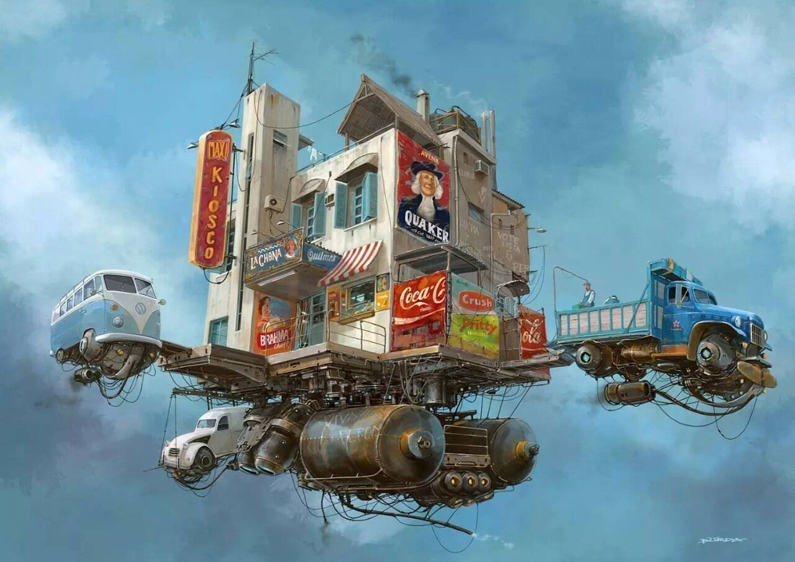
当年的人，真的这样想象过未来
钢铁、流线、飞艇、巨构，不是后人编出来的。1930 年代的人在世博会上看过 1960 年的高速公路，在杂志上读过飞艇将停靠在摩天楼顶。这一节只讲当年发生过的事，再对照后来的现实。
1.1一个发明者的消失
Rudolf Diesel 1858 年生于巴黎，是巴伐利亚移民之子。1892 年取得专利，1897 年在奥格斯堡机器厂完成公开试验，1898 年他已是百万富翁。[H001 H002]
他想象的不只是「更省油」。1912 年，他在书的导言里写下植物油燃料的预言：
后来的现实：石油柴油统治了此后近一个世纪，生物柴油是后来才被拾回的路线。[H018]
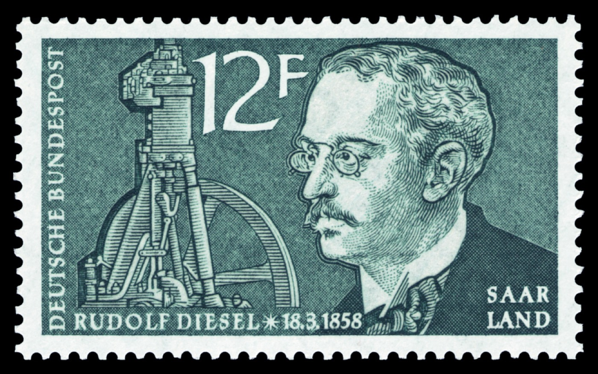
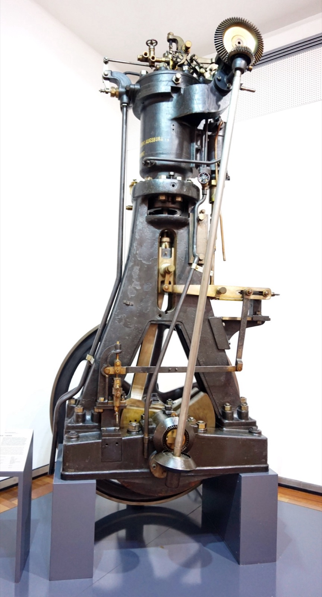
1913 年 9 月 29 日晚，他在安特卫普登上 Great Eastern Railway 的汽轮 SS Dresden，前往伦敦。次日清晨床铺未动，帽子和折好的大衣留在后甲板栏杆下。十天后左右（10 月 10–11 日，同期来源不一：荷兰电报写「周六」，即 10 月 11 日；Eugen 的访谈转述写 10 月 10 日），荷兰领航运输船 Coertsen 在东斯海尔德河口看到一具尸体，因天气不好只取回随身物品；10 月 13 日由儿子 Eugen 在 Vlissingen 辨认。美国报纸（如 Evening Star 1913-10-14）只写是一名 boatman 捞起的。[H001 H006 H259 H260]
至今没有定论：自杀（传记作者多倾向此说，但无遗书）、谋杀、英国情报机关安排的假死，三种说法并存。[H001 H015 H016 H003]据说他此行的目的之一是洽谈英国皇家海军的潜艇柴油机。[H001]存疑日记里画叉、家里发现 2 万马克现金，是流行说法：能追到的最早出处是 2008 年 Greg Pahl 的《Biodiesel: Growing a New Energy Economy》，Wikipedia、TIME（2015）、Smithsonian（2021）都是转述；同期 1913 年的美国报纸（66 页）和荷兰报纸（141 篇）里一条也没有。Eugen Diesel 1937 年的传记存在，但拿不到内容，无法核对。[H261 H259 H260]
自杀与财务困境的猜测，1913 年当时就有：旧金山《Call》10 月 2 日的标题已经在问「落水、离船，还是自杀」，《The Sun》10 月 13 日（柏林电）与荷兰《De Telegraaf》的编辑按都说他的资金砸进了失败的企业；也有人说他「a very cautious man」。首日（10 月 1–2 日）也并非一致认定失踪：慕尼黑曾发出电报称「伦敦来电否认」，10 月 9 日又有 Dresden 船员称他上船后又上了岸。1914 年 3 月「他在加拿大」的传言，同样是当时的报道（慕尼黑《Münchener Abend-Zeitung》，荷兰、美国报纸转载），不是后人新造的。畅销书《The Mysterious Case of Rudolf Diesel》（2023）的核心论点是英国把他送去了加拿大；Brunt 用了哪些档案、有没有引用日记，我没读到全文，没有核实。[H259 H260 H261]
1.21934 年的一则广告：说对了大半，说错了一件
同一页的配图说明写着：Burlington 的柴油动力「Zephyr」从 Denver 到 Chicago 一气开完 1,016 英里，只烧了 16.72 美元的燃油。[H176]
实际的 1934-05-26「黎明到黄昏」：1,015 英里，13 小时 5 分，平均时速 77.5 英里、最高 112.5 英里，当晚直接开进芝加哥世博会。燃油成本不同来源给出 14.64（PBS）与 16.72（广告）美元两个数，这里只写「约 15–17 美元」。[H038 H058 H176]
里程 1,015 与 1,016 也是来源之间的差别，这里取 1,015。
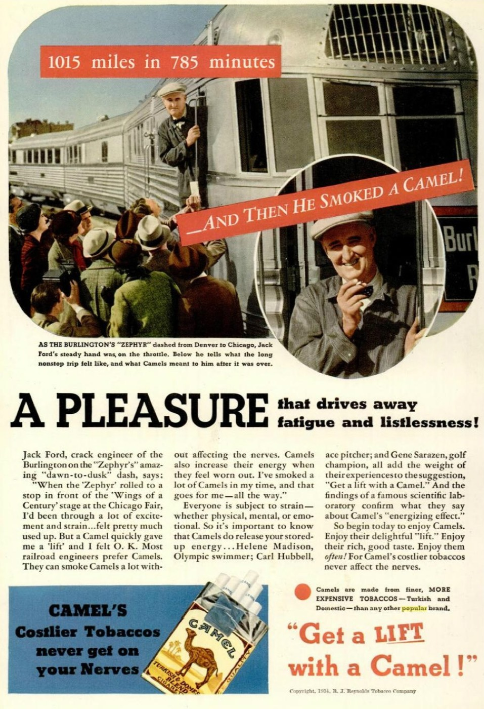
1.3「速度是我们时代的呼喊」
Norman Bel Geddes 的《Horizons》（1932）把「流线型」推成了大众审美。同一本书里，他也写下了柴油朋克悲观一面的原型。
他自己设计的远洋客轮长 1808 英尺，排水量约 7 万吨，载 2000 名头等舱乘客；烟囱几乎融进船体，前烟囱里是带舞池和酒吧的咖啡馆，后烟囱是水上飞机机库。他还强调这是「一艘在现有条件下就能建造和运营的蒸汽船」。[H040 H044]它从未建造。
另一份纸面方案是 1929 年的 Airliner Number 4：九层的水上飞机客机，含运动甲板、乐队、健身房，据称受 Dornier Do X 启发，同样没有建造。[H046 H043]
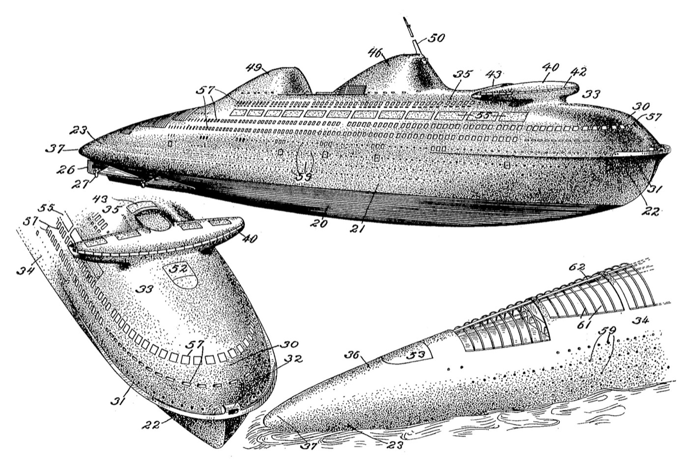
1.4两届世博会，和一个 1960 年的模型
1933 芝加哥「进步的世纪」。1929-10-28 发行的 1,000 万美元世博债券，第二天就遇上股灾，所以这届以「进步」命名的展览诞生在大萧条边缘。1933-10-26 Graf Zeppelin 飞抵芝加哥；展览延续到 1934 年，1934-05-26 Zephyr 当晚直接开进会场，「the frenzied crowd surged forward to touch its new mechanical hero」。[H069 H038]
1939 纽约「明日世界」。Trylon 610 英尺、Perisphere 180 英尺，球体内部是 Henry Dreyfuss 的 Democracity；两季合计约 4,500 万人次。[H070 H072]同年 9 月欧战爆发，展览持续到 1940 年 10 月。
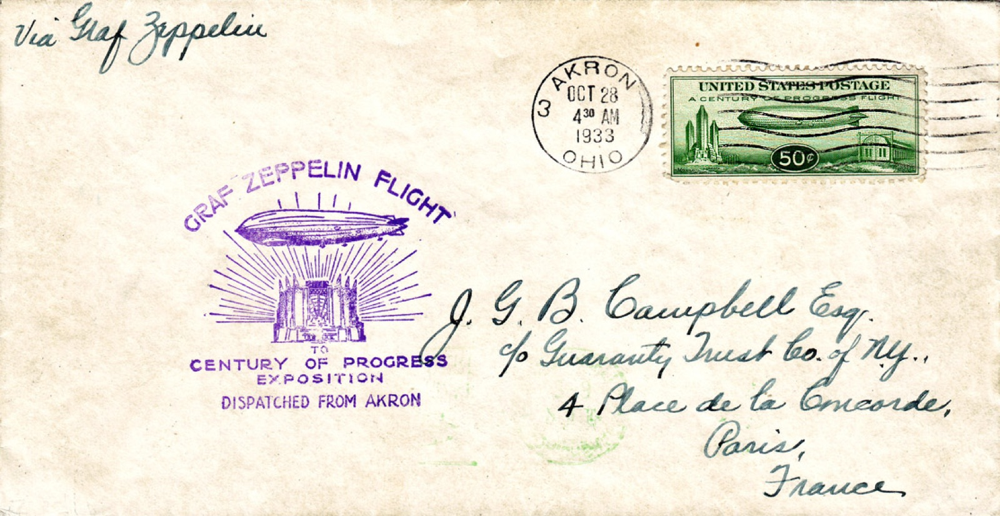
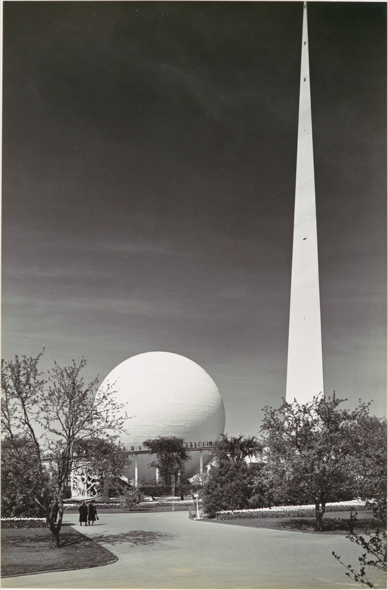
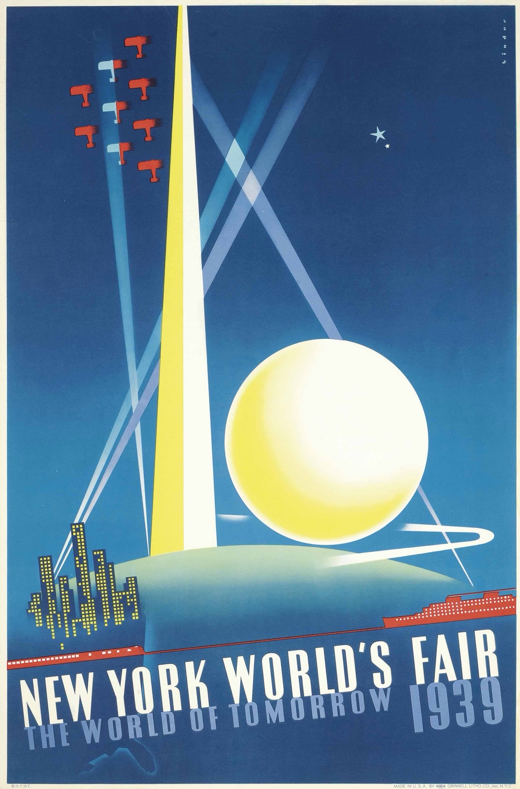
Futurama：1960 年有多少辆车？
通用汽车馆的 Futurama 由 Bel Geddes 设计：35,000 平方英尺、408 个分段，观众坐在「carry-go-round」传送带的 552 把带声音的椅子上，每小时约 2,150 人、每天约 28,000 人。他后来说有五百万人看过，队伍常排一英里多，等一小时，只为十六分钟。[H081 H042 H036]
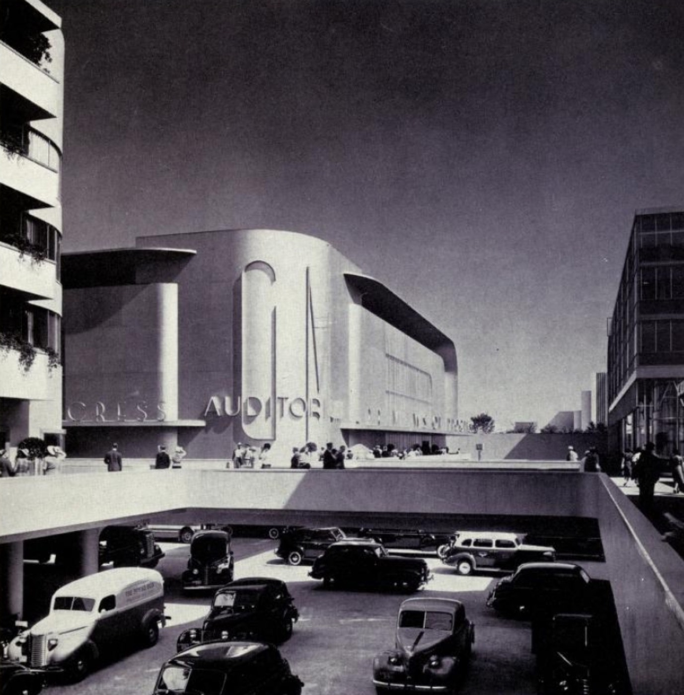
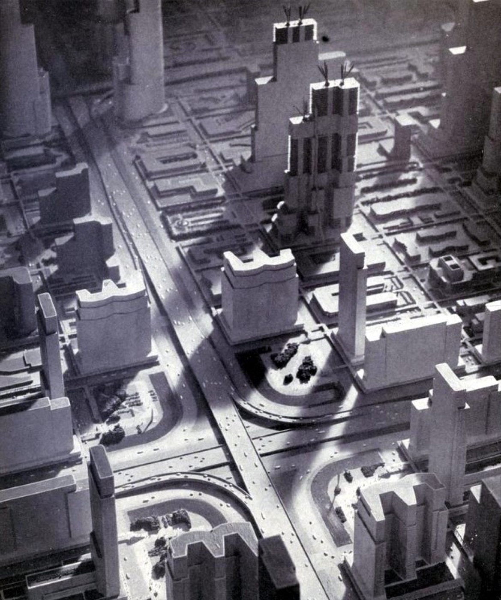
预言被拿来卖汽油。1937 年 Shell 的整版广告用 Bel Geddes 的名义预测 1960 年的城市：50 英里时速的快速路网，没有红绿灯、路口和行人；二层人行道架在街面之上。广告的转折句是：「…but TODAY, 4 miles in 5 are Stop and Go」，要卖的是 Super-Shell 汽油。[H056]
Futurama 被「实现」了多少，要拆开看：形态实现，运行逻辑未实现，数字被低估。立体交叉、中央隔离、限制出入的快速路，后来在 1956 年的州际公路系统里成了现实；但 GM 手册里的同向七车道、50 / 75 / 100 英里分速车道和用无线电指挥换道的控制塔，没有出现；1960 年的汽车数量也被少算了。[H081 H263]因果也不能倒着写：联邦公路局 1938–39 年的《Toll Roads and Free Roads》自己就有同类规划，MCNY 只说 1944 年联邦援助公路法案与 Bel Geddes 的网络「有相似之处」，所以更稳的说法是「同时期、相呼应」，不写「预言成真」，也不写「Futurama 导致了州际公路」。Wikipedia 说 GM 在 1960 年造出自动化公路原型，这一条没有核实，不采用。Wilson Center 的 futurama.pdf 是一篇 4 页的随笔，没有脚注，不当史料用。[H036 H071 H262 H263]存疑
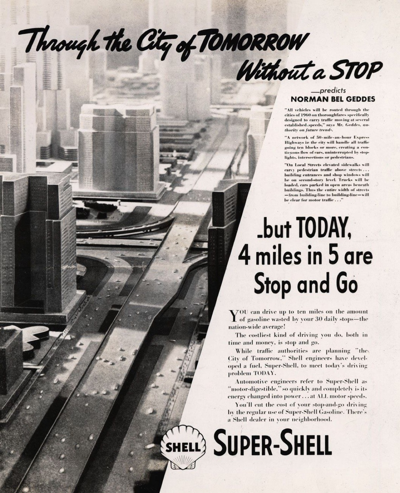
1.5飞艇的八年：从未来变成过去
一样东西，在 1928 到 1937 年间，从「未来的交通」变成了「过去的事故」。拖动滑块，或点轴上的圆点。
「飞艇停靠摩天楼」是当年最有名的想象之一。1929 年 Empire State 的业主宣布加高 200 英尺装设系留桅杆，乘客走舷梯、几分钟内到街面；Hugo Eckener 公开说不切实际（地面人手、绳索、风）。[H107 H108]现实里的接触只有一次：1931-09 一艘小型私人飞艇与桅杆短暂接触约 3 分钟。[H107 H108]
细节在来源之间有出入：Smithsonian 说 1931-09 一艘私人飞艇停靠了约 3 分钟；MCNY 说 Columbia 总共三次尝试都因风失败。所以这里避免写「成功停靠」。存疑[H107 H108]
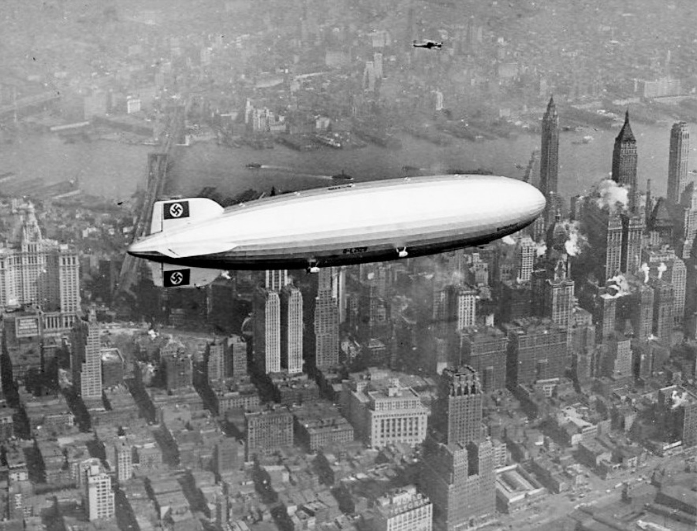
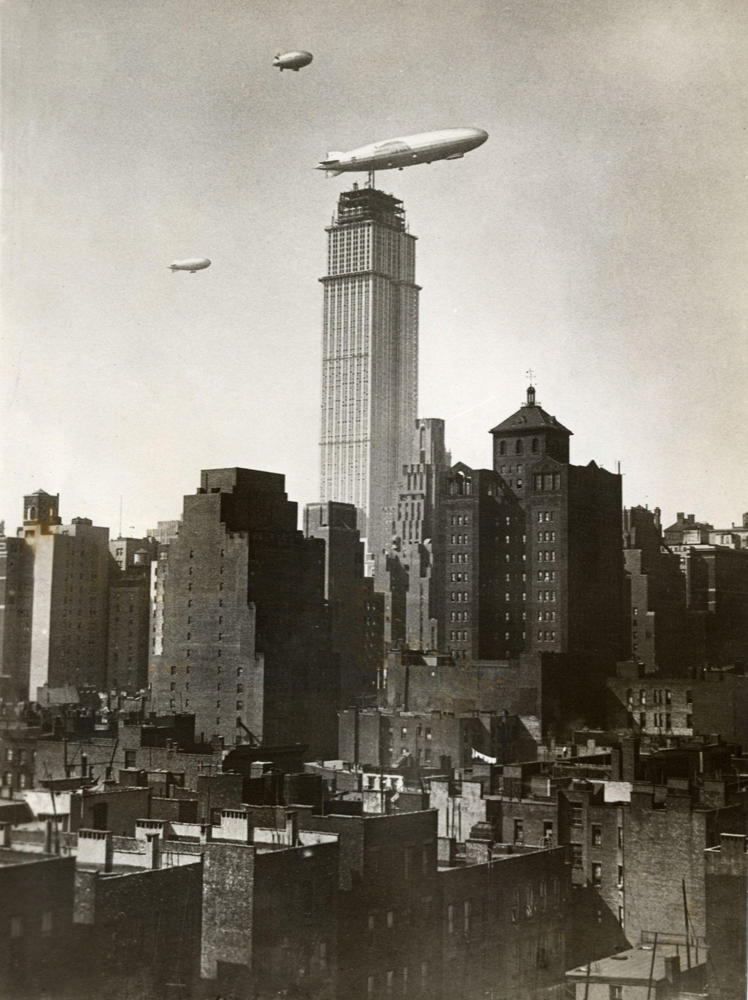
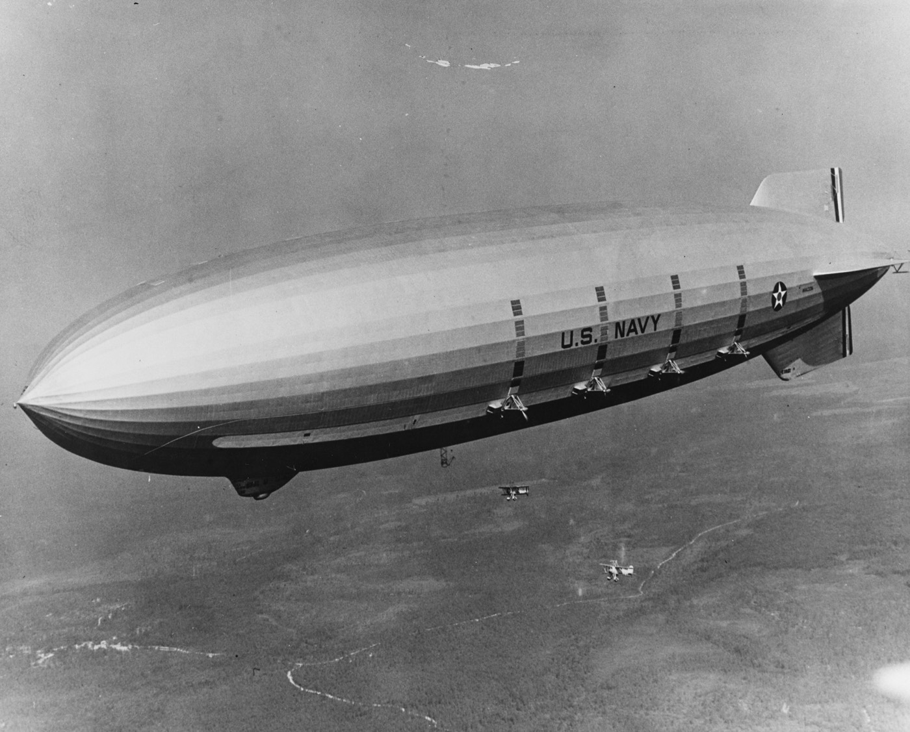
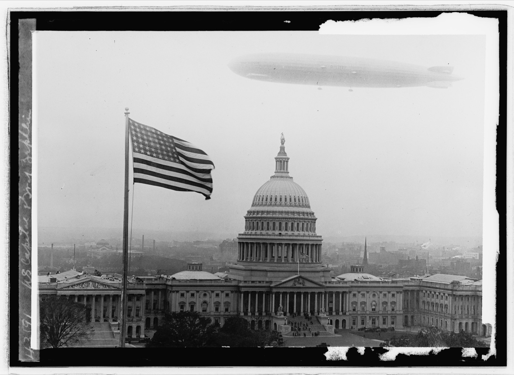
飞艇也烧柴油：Hindenburg 用四台 Daimler-Benz 柴油机，R101 用 Beardmore Tornado 柴油机。[H103 H012 H111]美国垄断氦气，德国充氢气；R101 之后 Zeppelin 公司本想改用氦气，最终仍是氢气。[H103 H102]
Hindenburg 并不是死亡最多的飞艇事故，却最出名：它本就是明星，现场录音第二天就播出，又是纳粹的宣传机器。[H135 H136]社区回答，需核实
1.6杂志里的未来，和一个小实验
1926 年 Hugo Gernsback 创办《Amazing Stories》，刊头标语是「Extravagant Fiction Today — Cold Fact Tomorrow」。他的编辑系统（《Science and Invention》→《Amazing Stories》→《Wonder Stories》）和 Frank R. Paul 的封面，把未来城市、飞艇和机器送进了大众视野。[H164 H182 H162]
1932–33 年的「技术统治论」（Technocracy）把工程师当作社会的管理者，是后来极权与技术官僚式「柴油朋克悲观面」的思想底色。[H170]
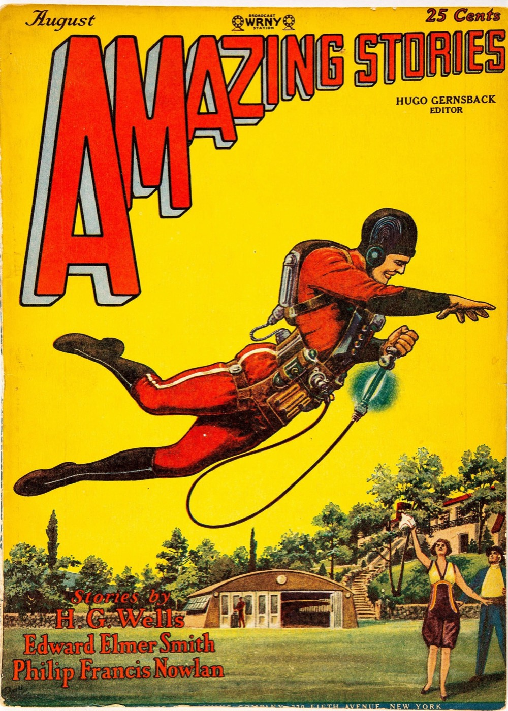
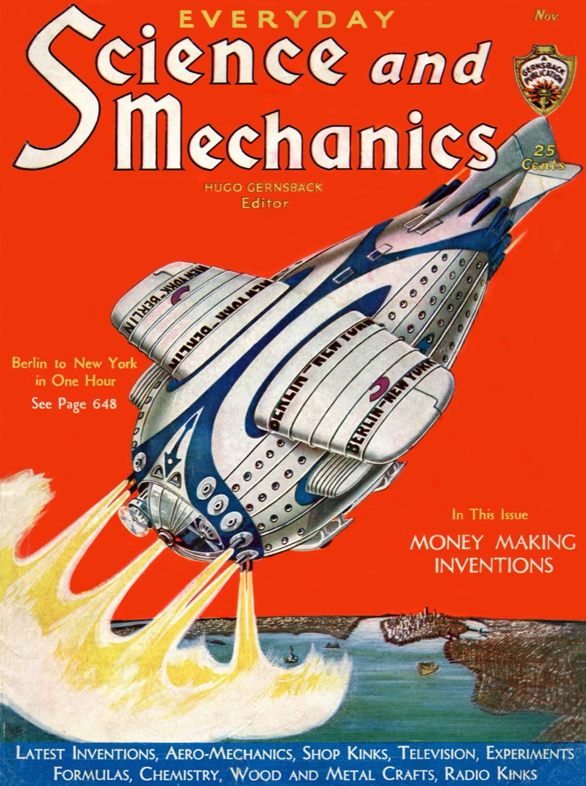
结论：「柴油」在 1934 年之后的原始命中数确实暴涨，但 61–96% 落在广告页，主要是柴油机培训班的函授广告（与 1.2 那则「Is Your Job Safe?」同一类）；去掉广告后，编辑正文里的柴油频次没有清晰上升。柴油在大众科普刊里首先是一份新饭碗，其次才是未来。流线型（1934 年抬头）和飞艇（1930–31 年高、1936 年因 Hindenburg 回升）的趋势则保留。[H264 H176]
方法与局限：样本来自 Internet Archive 的 OCR：Popular Science Monthly 32 期、Modern Mechanix 22 期、Popular Mechanics 14 期，每年只有 4–10 期，月份分布不均（1937、1938 年的 Popular Science 只有半年合订本，没有采用）。按页用「coupon、send for、美元符号」等线索打分，整页剔除广告，是启发式判断，误判率没有系统估计。频次 = 编辑页命中数 ÷ 编辑页词数 × 1 万。刊物组成随年份变化：Modern Mechanix 从 1932 年才入样，且频次本身就高，所以三刊合计的曲线会被组成拖动；Popular Mechanics 1930–31 年的扫描几乎没有广告页，那两年的「广告占比」偏低是来源差异。OCR 错字（如「Dlesel」）会漏计。所以跨年绝对值不能直接比，建议看单刊曲线；这只是趋势提示，不是统计结论。[H264]
1.7纸面上的巨物
巨型飞机、陆地巡洋舰、改造地中海的大坝：规模总是跑在经济性和技术前面。写的时候要分清哪些造出来了，哪些只在纸上。
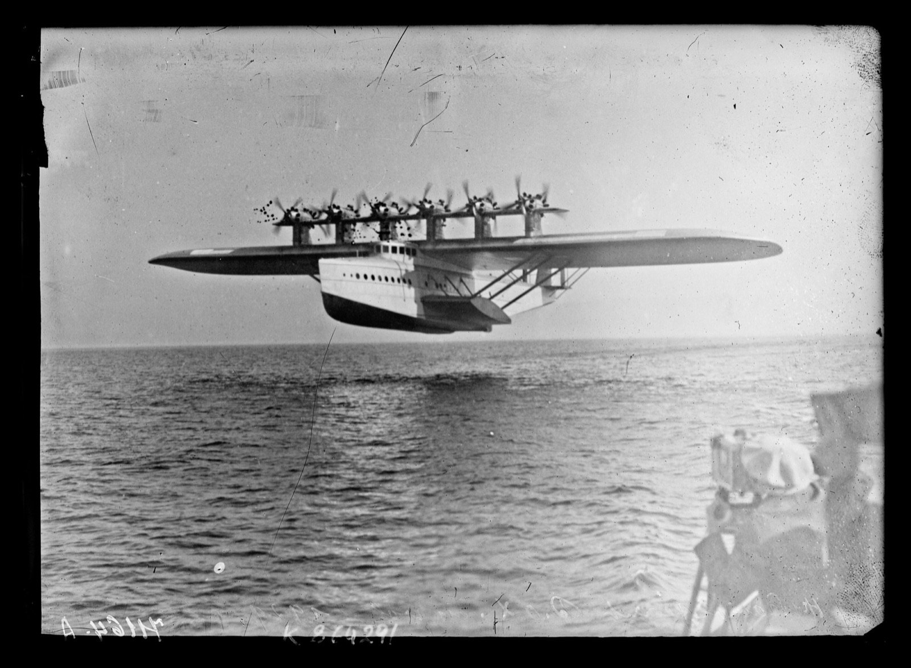
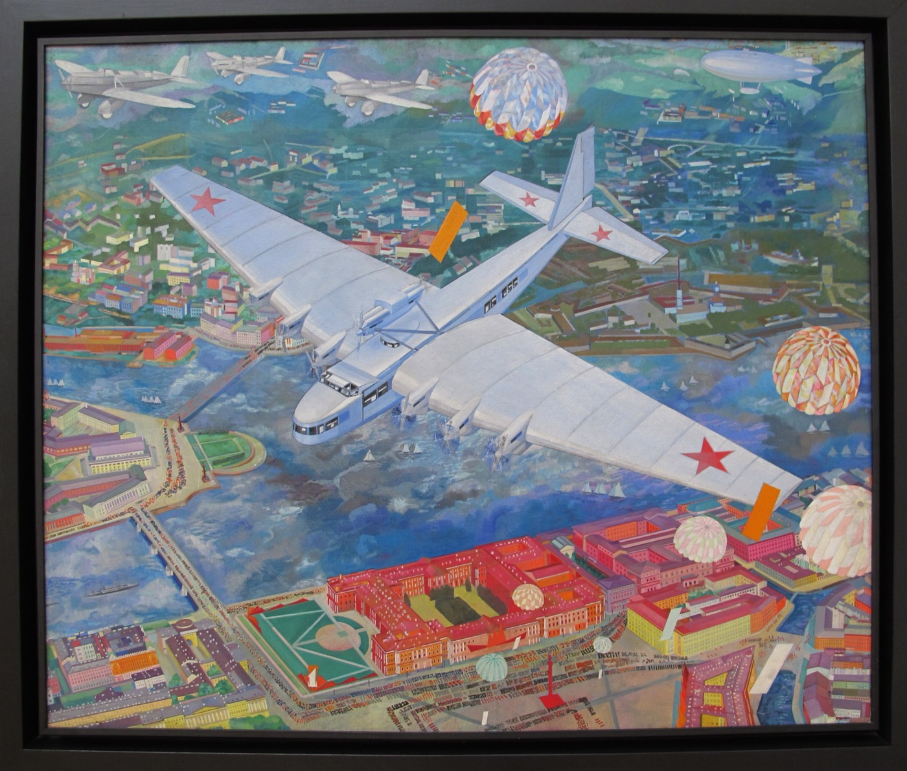
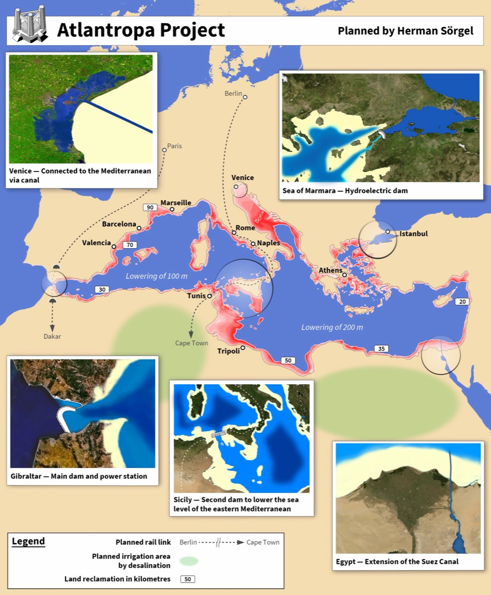
| 项目 | 当年的想象或事实 | 后来的现实 |
|---|---|---|
| Dornier Do X | 12 台发动机的飞船，1929 年 7 月首飞；1929-10-21 载 169 人 | 只造了 3 架，没有商业生命力[H199 H234] |
| Maxim Gorky（ANT-20） | 8 发的宣传飞机，1933–34 年建造 | 1935-05-18 与伴飞战斗机相撞，坠入莫斯科住宅区，Wikipedia 记约 45 人遇难[H200 H235]人数口径存疑 |
| Horten 飞翼 Ho 229 | 1945-02 动力首飞，V3 被美军缴获 | 今存 Smithsonian；飞翼要到 B-2（1989）才成熟，「B-2 受 Ho 229 启发」一般认为是后见之明[H201 H202 H221] |
| Atlantropa | Herman Sörgel 1927 年起推广：在直布罗陀筑 35 公里长的坝，地中海水位降约 200 米，新增约 60 万平方公里陆地 | 从未动工；Sörgel 1952 年车祸去世，研究所 1960 年解散。同时期荷兰 Zuiderzee 围垦（1923–32）却是真的[H203 H217 H250] |
| Landkreuzer P. 1000 Ratte / Schwerer Gustav | 1,000 吨的陆地巡洋舰；Gustav 是历史上口径最大的实战线膛炮 | Ratte 只是方案（1943 取消）；Gustav 在 Sevastopol 真的打过[H204 H205] |
| 超级战舰 | Yamato 近 72,000 吨、46 厘米主炮；美国 Montana 级；德国 Plan Z | Yamato 1945-04-07 被舰载机击沉；Montana 1943 年取消（让位航母）；Plan Z 因战争中断[H206 H207 H228] |
| Habakkuk | 英国设想用 pykrete（木浆加冰）造航空母舰 | 未造成[H208] |
真实的巨构集中在水坝与铁路（Hoover Dam 1931–36、Trans-Siberian 1891–1916），而不是飞艇和海峡大桥。[H209 H212 H213]
1.8当年的想象 vs 后来的现实
十二条。先看左边的想象，想一想结局，再点右边揭晓；也可以一次全部揭开。
它的样子，是从哪几处拼出来的？
柴油朋克的画面不是单一来源，而是三层叠起来的：乐观的垂直城市，暗黑的机器与极权，以及当代艺术家画出的脏机器。
2.1三层叠起来的画面
这是一个事后的并置，不是当时的运动名：本专题检索到的博物馆页面里，没有哪家用「dieselpunk」来称呼这些东西（检索范围有限）。[V17]
2.2同一个 1925 年：两种现代在巴黎相遇
1925 年 4 月 29 日到 11 月 8 日，巴黎举办装饰艺术与现代工业博览会。纲领只收「clearly modern」的作品，不收历史风格；原定 10 月 25 日闭幕，因观众超过 1,600 万延长了两周。[V07]
美国没有去。时任商务部长胡佛解释说，美国没有现代艺术。几年之后，美国成了装饰艺术摩天楼之都。[V07]
同一个展览里，有两种相反的「现代」：
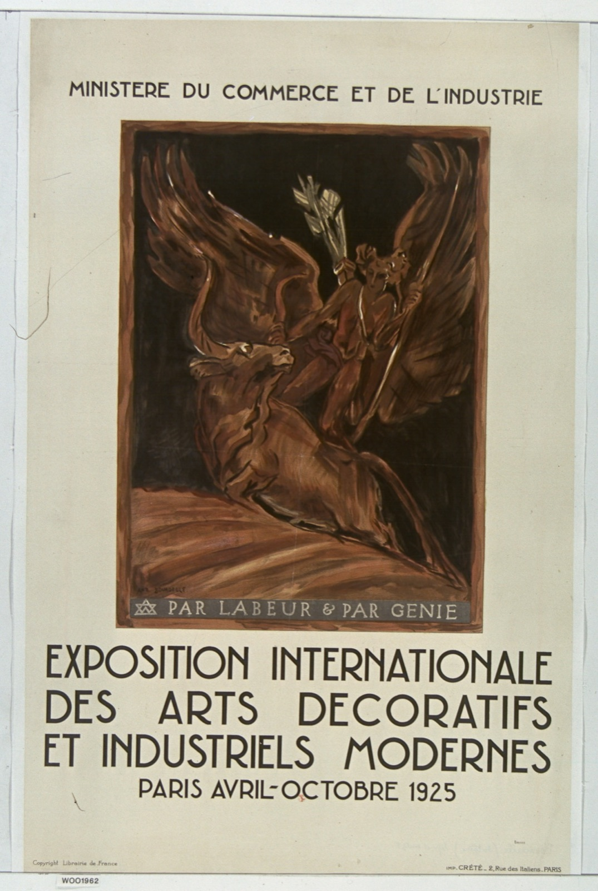
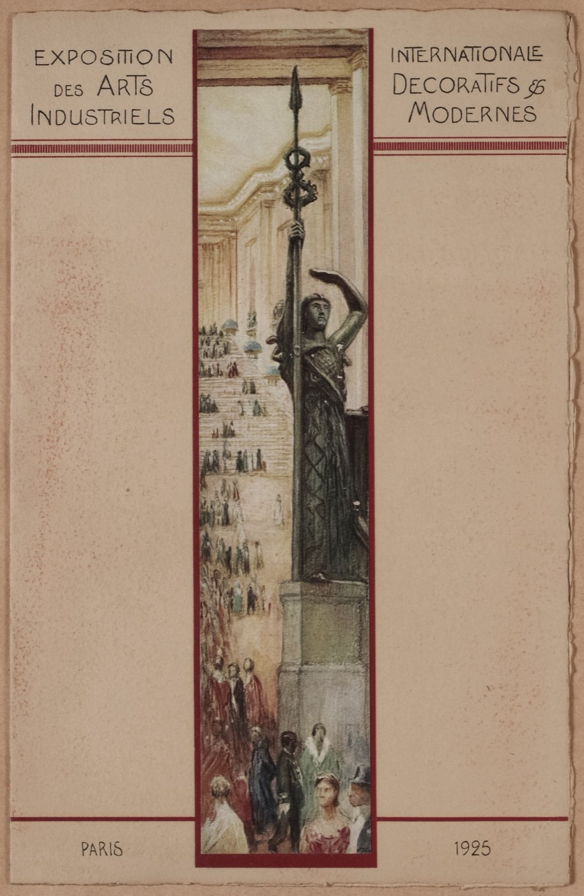
奢华的 DECO
Ruhlmann 的「收藏家之家」：昂贵的木材、象牙、漆艺。V07
裸露的机器
Le Corbusier 的 L'Esprit Nouveau 馆：「Decorative art, as opposed to the machine phenomenon, is the final twitch of the old manual mode, and is a dying thing.」V07
苏联馆
Konstantin Melnikov 设计，只用木头和玻璃，一道斜穿外立面的楼梯。V07
另有一处细节：Cassandre 为细木家具商 Au Bûcheron 画的 1923 年海报在这次展览拿了大奖，画面里同时出现金色放射与阶梯形结构，太阳纹加阶梯是 Deco 的两个母题。[V27]这给后来柴油朋克的两个分支一个共同起点：Ottensian 对应装饰性与乐观，Piecraftian 对应实用与阴沉（本页对应，非来源原话）。
2.3一条法规长出来的塔，和一个画黑色的人
阶梯形的退台塔楼，出处不是审美，而是一条建筑法规。
建筑师 Harvey Wiley Corbett 与 Hugh Ferriss 1922 年合作画了「Four Stages of the Maximum Mass of the Zoning Envelope」，演示法规允许的最大体量如何一步步变成塔楼。Ferriss 同年在《纽约时报》主张：用钢和玻璃取代砖石之后，「the unadorned, unornamented skyscraper was the only truthful architectural solution」。[V26]
他的画法是：先用油性蜡笔打出最深的黑，用纸擦笔把暗部拉出灰调，再用橡皮擦出高光，最后上光油。光是从黑里挖出来的。[V26]
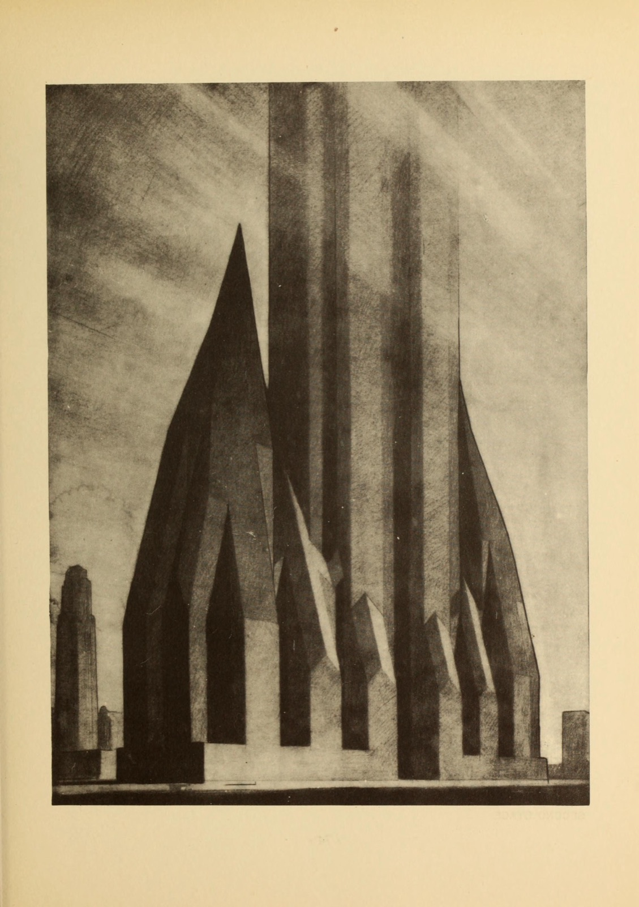
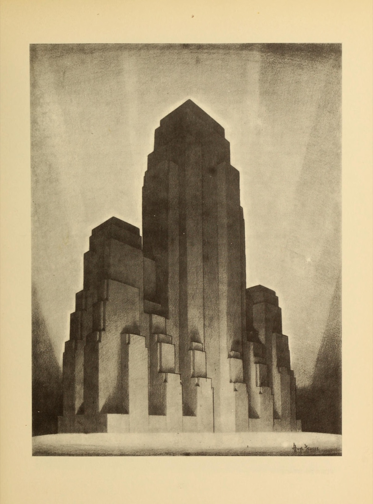
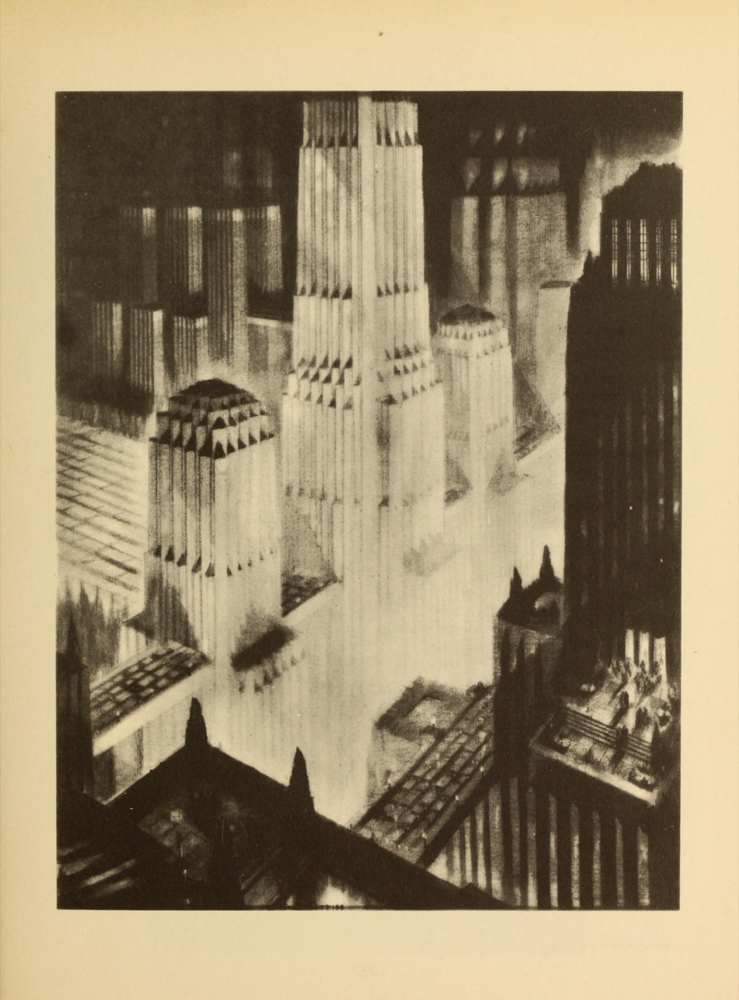
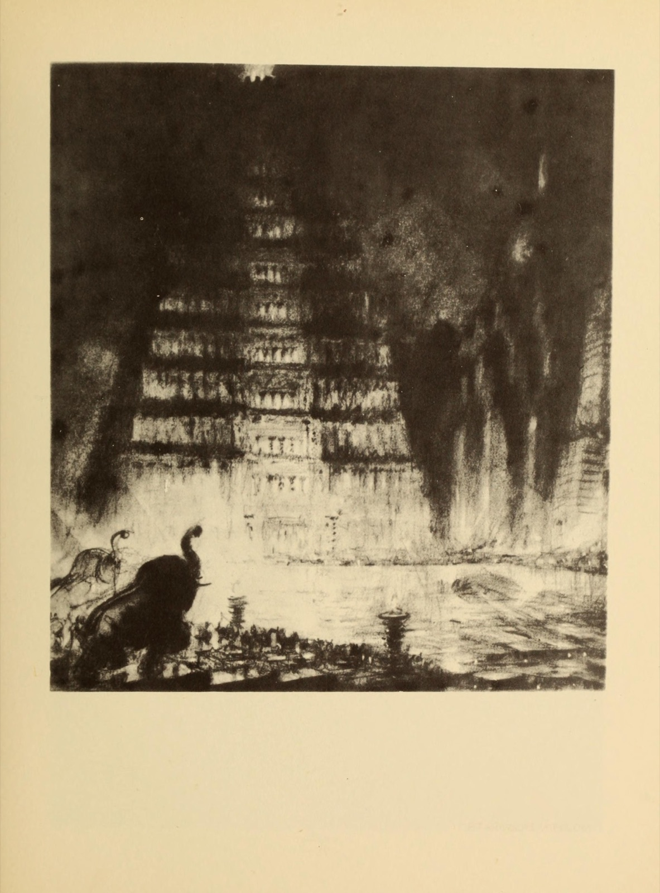
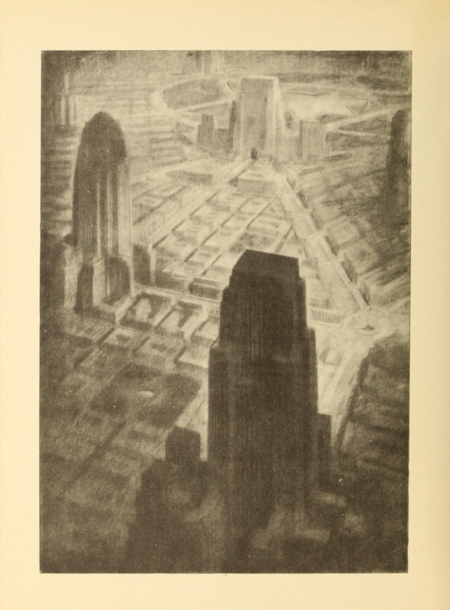
据 Public Domain Review 的文章，Ferriss 的画成了「美国都市未来的形象在大众想象中成形」的途径，也影响了 Bel Geddes 的 Futurama、迪士尼 Tomorrowland 乃至《The Jetsons》。[V24]
版权提醒：Ferriss 1929 年的书在美国已进入公有领域，但他 1962 年去世，在「作者死后 70 年」的法域（欧盟等）至 2032 年仍在版权期。Ferriss 生于 1889-07-12（St. Louis），卒于 1962-01-28（忌日各家有 01-28 与 01-29 之别）；网上偶见的 1899 是 Public Domain Review 的笔误，依据是 LoC 名称权威档（Ferriss, Hugh, 1889-1962）与 Columbia Avery 的档案说明。[V42]
Rapture：直系后代
BioShock 的维基页明说：美术组参考了 Gotham 式的大都会，「with Hugh Ferriss's architectural illustrations and the Art Deco architecture of New York City providing inspiration for the look and massing of Rapture's skyline」。Ferriss 条目也把 Gotham 与《天空上尉》列为受他影响的作品。[V16 V06]Nick Ottens 2008 年的《Dieselpunk Architecture》以 HUGH FERRISS 为小节标题，写道「when it comes to architecture, one name stands out in particular」，所以他是柴油朋克乐观 Deco 一路的基础图像。但同一页 Ottens 也写，战后一路的柴油朋克建筑，定义 1940–50 年代风景的主要是纳粹德国与苏联的纪念碑式建筑，而不是摩天楼；Ferriss 不是整个柴油朋克建筑的源头。[V41]
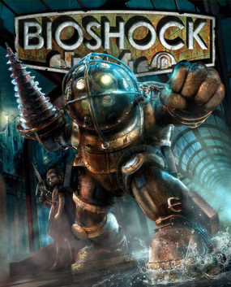
2.4三座塔：机器零件变成了装饰
2.5《大都会》：垂直城市和它的阴影
Fritz Lang 说，《大都会》（1927）源于 1924 年 10 月第一次看到纽约摩天楼：楼群像「a vertical sail」，轻盈闪烁，悬在黑夜里让人眩晕。[V01]特效师 Eugen Schüfftan 用镜子把演员「放进」微缩模型；机器人 Maschinenmensch 由雕塑家 Walter Schulze-Mittendorff 制作：先给 Brigitte Helm 全身打石膏模，再围着模子做外壳。[V01]
SF Encyclopedia 称它是这套意象的「母矿」。具体是什么：垂直堆叠的阶层、光从上往下、机器的对称几何。[S13]BFI 认为片中用微缩模型造出的装饰艺术城景，成了后来从《银翼杀手》到《妙想天开》的反乌托邦城市的模板。[V21]
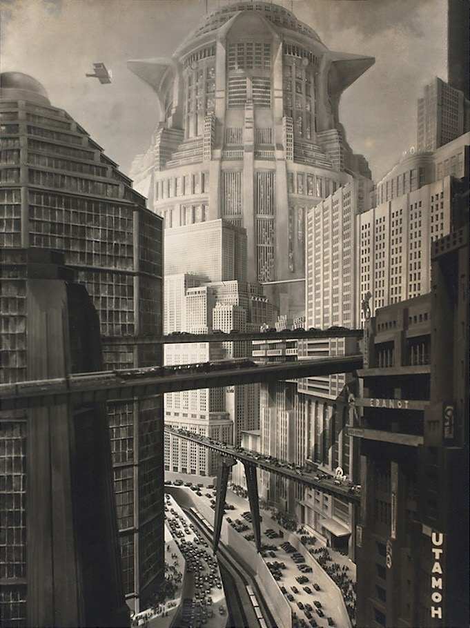
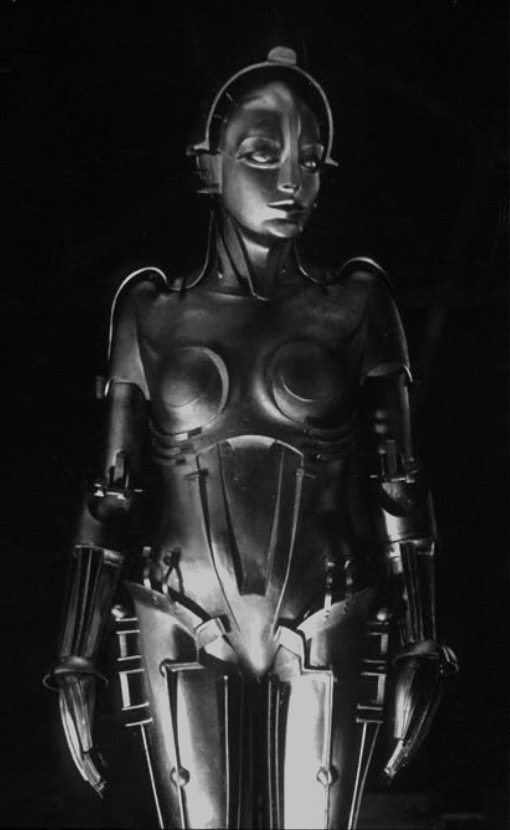
《大都会》之后，另一条光影血统接上：表现主义的电影人因纳粹上台流亡好莱坞，Lang 的《M》（1931）是最早把「黑色电影式视觉」与犯罪情节结合的有声片之一。低调布光、强烈明暗对比，百叶窗或栏杆的影子投在人物与墙上，成了标志画面。[V04]从「垂直城市」到「窗帘的影子」，这是柴油朋克「暗黑层」光影的根。
相对地，《Things to Come》（1936）是理性主义乌托邦的另一极：白、光滑、无装饰、巨大。Moholy-Nagy 曾被请来做重建 Everytown 的特效段落，最后只用了约 90 秒。[V03]
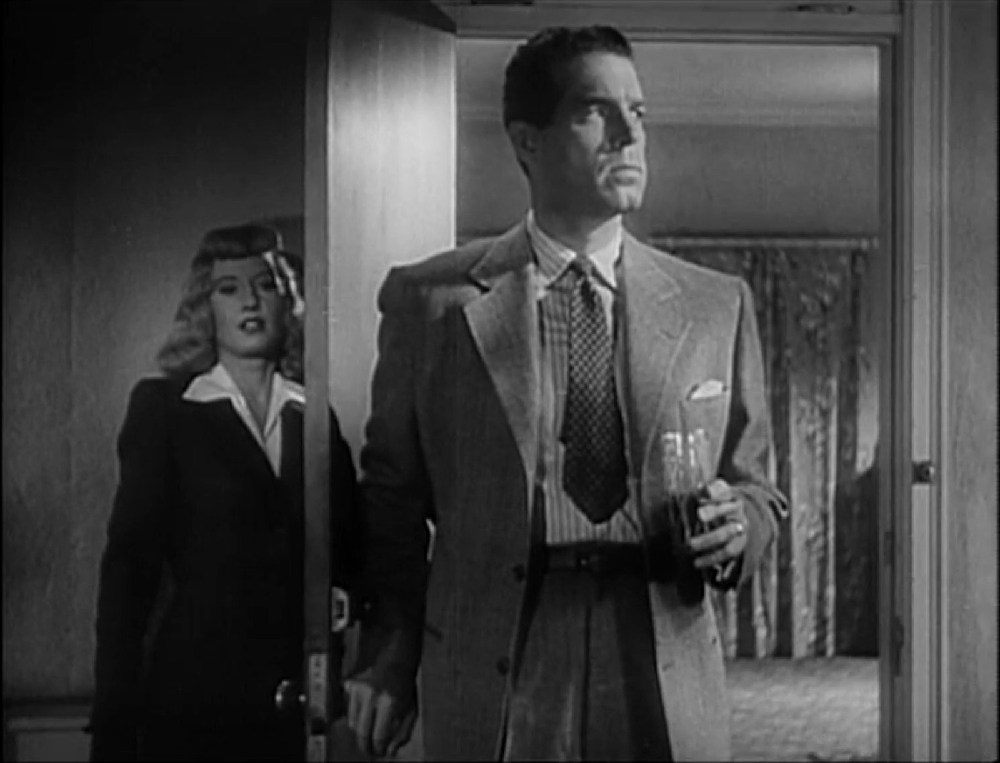
2.6乐观的机器、极权的机器，和更早的速度崇拜
海报与平面这一路，有三个常被柴油朋克写作略过的源头。本专题检索的英文柴油朋克论述里，Cassandre 没有出现过，构成主义也只被列了名（检索范围有限，不是穷尽的结论）。
2.7机械的语法：一台机器怎样一眼看出是「柴油朋克」？
这是机核 JustCz 概括的四条：钢铁之美、铆钉拼接、简单几何、流线造型。
2.8光鲜的爵士时代，和战壕，是同一个年代吗？
Decodence 是 Deco 加 decadence。拖动中间的把手，从盖茨比的舞会滑到一战的毒气战场。
光鲜的一面
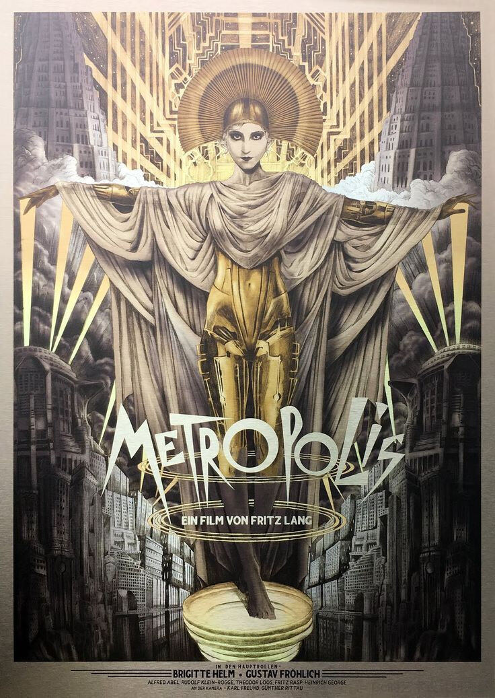
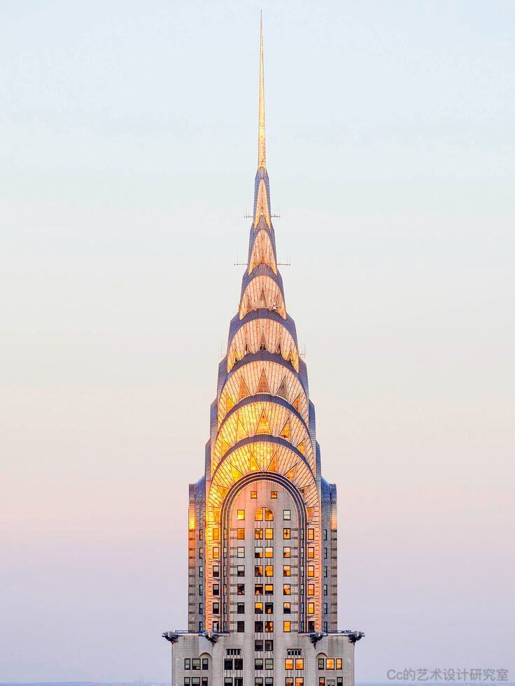
另一面
2.9当代的脏机器：三个不同的来源
给文章配「当代柴油朋克」图时，要分清三种东西，它们的色调几乎相反。
2.10视觉配方：造型、色板、字体、构图、材质、母题
把上面各节归成六类。每一条标了历史出处。色值全是现代重建：没有任何博物馆发布过当年的色卡。Awedeco 的原话是：「No standard defines them. Art Deco predates screen color, so every HEX code is a modern approximation」。[V37]
词在 2001 年才出现，风格比它早得多
「Dieselpunk」这个词能追到 2001 年的网页，它指的那个年代却被各家说得差了六十多年；而社区里还有人主张，风格的起点在 1981 年的一记鞭响。
3.1词源：Pollak 与《Children of the Sun》
词源
多个来源（机核、英文维基、SF Encyclopedia 等）把这个词归到游戏设计师 Lewis Pollak 名下，说它出自 2001 年的桌面角色扮演游戏 《Children of the Sun》（太阳之子）。[S07 S09 S13 S14]英文维基说它是 cyberpunk 的衍生词，对应 steampunk 的戏谑命名。[S09]再往一手去查，能确认的是最早的用例：发行商 Misguided Games 官网上《Children of the Sun》那一页。Wayback 2001-04-06 的快照副标题还是「A technological fantasy RPG」，2001-06-29 的快照页首写「Updated 6/11/01」，副标题已是「A Dieselpunk Fantasy Role-Playing Game」。所以官网上的出现区间是 2001-04-06 至 2001-06-29；2001-11-19 有一篇 GamingReport 访谈，2002 年 6 月书出版。[W231 W230]页面自标的更新日不一定是写入日
中文的说法
区分「词」与「书」。词 2001 年上半年出现在网页上；《Children of the Sun》这本书，维基页写的出版年是 2002。[W147 W32 W231]作品本身几乎没有人玩过：RPG 评论者 Kenneth Hite 的评价是「Not really diesel, and not really punk」。[W175 W32]Hite 的话来自 TV Tropes 的转述
另一句常见的「a world of grit and oil, dust and mud」不是 Pollak 的回答：在访谈里它是采访者的提问，官网上的设定文字是「Raevich is a world of grit and oil, of dust and mud」。本页只把它当作设定文字。[W230 W231]
3.2「柴油时代」从哪年到哪年？
3.3战争在先，名字在后：一条总时间线
把「时代」「想象与视觉」「作品」「词与讨论」四条线放在一起看。
3.4蒸汽、柴油、原子、赛博：差在哪？
按年代、材质与动力、情绪三个维度，把四种朋克横向摆在一起。
图中色带仅为示意，用来对应原文的「金色黄铜」与「锈银镀铬」，不是考据色值。
3.5同样是柴油朋克，为什么有人乐观有人悲观？
英文圈用两个人名划了一条线：Ottens 代表乐观（Ottensian），Piecraft 代表悲观（Piecraftian）。
Ottensian：乐观
没有大萧条的架空历史，「seemingly unstoppable progress and unfaltering faith in the future」。摩天楼是装饰艺术风，飞艇仍在天上。[S11]
Piecraftian：悲观
用 Piecraft 自己的话说，是「more of a continual dystopian view」，奥威尔《1984》那一路：二战仍在以冷战形式继续，或轴心国赢了。[S11]
3.6社区怎么给自己命名
The Gatehouse → Never Was。由 Nick Ottens 主编的 The Gatehouse（2008–2018）自称「an online, non-commercial alternate-history magazine」，关注蒸汽、柴油、原子三个时代；2018 年改名 Never Was。双月电子刊 Gatehouse Gazette 出过 2008-07 至 2011-11 期，另有 2012-08 特刊。[W160 W161 W174]全部 22 期可在 neverwasmag.com 下载，许可为 CC BY-NC-ND 3.0。第 1 期（2008-07）里 Piecraft 与 Ottens 自己交代：atomicpunk、decopunk、aeropunk、nazipunk 这些名字，是爱好者在不知道 Pollak 的游戏术语时，为战间期风格另起的，并不是 Pollak 定义的别称；战间期的含义也是他们后来加上去的。[W240]
Dieselpunks.org。Tome Wilson 创办、2009 年上线，曾是英文柴油朋克讨论的中心。Ottens 2018 年回忆：「For years, we fought to get dieselpunk its own entry on Wikipedia. Now it's finally there…」维基条目是社区争取来的：2010-05-01 的 dieselpunks.org 帖子里，Ottens 自己说他「tried twice to get a Dieselpunk entry on Wikipedia approved」，两次都被判不够 notable（Wayback）。Piecraft 自称本名 Bernardo Andrade de Sena，是维基柴油朋克条目的创建者（本人自述，没有第三方独立证实）。[W161 W178 W238 W275]
Dieselpunk ePulp Showcase常被说成 Tome Wilson 的书，其实是四位站内作者（Grant Gardiner、John Picha、Bard Constantine、Jack Philpott）的免费短篇合集：2013-03-07 由 Wilson 发布，Picha 出 ISBN、封面和电子书；Wilson 写导读是推断，书本体拿不到。[W239]
三个测试。Larry Amyett 在 Never Was 上说，柴油朋克的哲学由三部分组成：decodence（Deco 加 decadence，Ottens 造词）、contemporary、punk。他明说「Dieselpunk is not reenactment nor is it a dream to live in the past」。[W151 T49]
Wilson 的说法：柴油朋克是「contemporary art strongly influenced by the pop culture and technology of the 1920s through the 1940s. Instead of recreating the past, dieselpunks incorporate modern technology, punk rock attitudes and postmodern storytelling techniques」。[W147]
摇摆复兴与音乐。Wilson 把 1990 年代的摇摆复兴看作柴油朋克的前史：Royal Crown Revue、Big Bad Voodoo Daddy、Squirrel Nut Zippers，Gap 的 Lindy Hop 广告。这股浪潮 2000 年前后退潮，用他的话说，「Bar owners didn't want dancers, they wanted drinkers」，DJ 比铜管乐队便宜得多。[W147]Electro swing（如 Caravan Palace）被 TV Tropes 称为「captures the essence of dieselpunk」。[W175]众包来源
同年（2001）还发生了另一件事：「atompunk」出现在 Usenet 上（已知最早的一帖是 10 月 29 日，比 dieselpunk 的官网首见晚约 4.5 个月）。见第七节。
被叫过「柴油朋克」的作品，有多少站得住？
社区和百科里点过名的作品折算起来约有两百个，其中约一半只有 TV Tropes 或单一线索支持。下面挑出证据较扎实的，按媒介和年代摆开，并标出有争议的。
4.1作品图谱：按媒介与年代筛选
4.2「Dark Deco」的来历：官方承认的一个个案
《蝙蝠侠：动画系列》（1992–95）不是被当作柴油朋克做出来的，却是这套美学「被官方承认」的最干净个案。
谁发明了这个词？Timm 本人说是他一时想出来的；Radomski 说团队当时「was calling」它 Dark Deco。两个一手来源略有出入，这里以二人的原话为准。另有一篇 2025 年的博物馆博客说是 Radomski 与 Dini 所造，与 Timm 的说法矛盾，只见于 AI 辅助检索的转述，不采用。[W145 W146]来源有出入
BTAS 的主创明说参考了 1940 年代的 Superman 动画系列（Fleischer Studios），Fleischer 的短片被 TV Tropes 称为「instrumental in solidifying the Raygun Gothic aesthetic」。[W11 W175]游戏《Skullgirls》（2012）的制作者也更愿称自己的风格为「Dark Deco」。[W175]众包来源
4.3争议作品：两边各怎么说
社区里最常见的吵法，是同一部作品被归到相邻的「朋克」。这里不裁决，只摆出两边的话和建议的写法。
4.4你熟悉的科幻形象，哪些是从战争里长出来的？
防毒面具、潜水服、德军飞碟：机核两篇里有四条线，一路走到大银幕和游戏里。
「海派柴油朋克」：一个被反复触碰、从未被命名的东亚版本
把 1920–40 年代的上海叫作「亚洲的柴油朋克之都」，是谁先说的？这个说法该怎么用？先说结论：它不是既有的子类型，但可以作为分析框架。
5.1视觉母体：上海的装饰艺术
谁的未来？上海装饰艺术的建造者几乎都是「外来者与买办资本」的组合：沙逊是英籍巴格达犹太商人；邬达克是一战被俄军俘虏、跳火车逃入中国的奥匈帝国军人，后来在上海留下 100 多个项目；百乐门的出资人是华商顾联承与一批银行家。「柴油时代的未来」在这里是租界和半殖民地资本合作的产物。[E01 E03 E05 E24 E29]
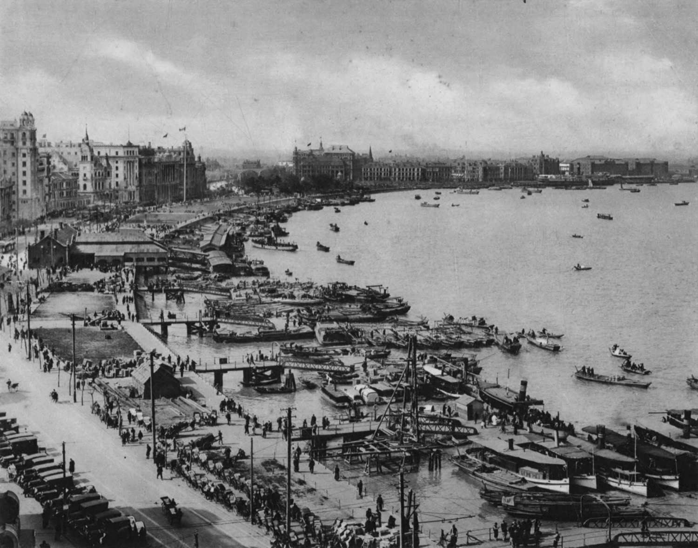
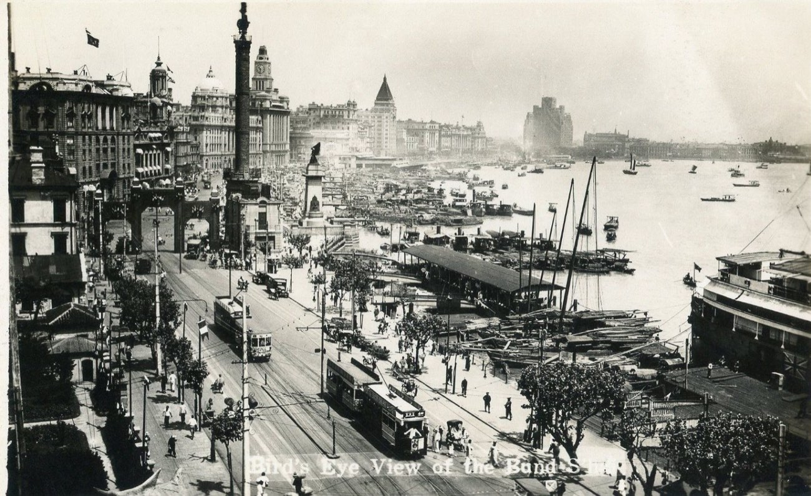
5.2「上海摩登」：《良友》、月份牌与新感觉派
《良友》1926 年 2 月在上海创刊，中英双语，以「运动中的摩登女郎」封面著称，被史学者称为「旧上海的视觉捷径」；学者 Maura Cunningham 同时指出，它也在示范满足男性凝视的女性范本。[E12]月份牌诞生于清末，最初由在华洋商用来推销商品，1920–40 年代鼎盛，画法统一为擦笔水彩，英美烟草和南洋兄弟烟草是最大的出资方。[E21]月份牌在 Commons 上找不到高清且授权明确的版本，本页没有使用。
李欧梵《上海摩登：一种新都市文化在中国 1930–1945》（Harvard UP 1999）：出版社简介把它概括成「一种既内在地属于中国、又深刻地反常的现代性」。史书美《The Lure of the Modern》（UC Press 2001）则主张把中国现代主义放回「半殖民地」的文化与政治结构里去理解。[E70 E69]这里只引用了出版社简介，没有读到书的正文，书中的具体论述需到纸本核对。未读正文
新感觉派两位核心作家，刘呐鸥（台湾台南人，1940 年 9 月被暗杀，时任《国民新闻》社长）与穆时英（1940 年 6 月在黄包车上被枪杀，1939 年出任汪伪系统报纸总经理，是否双面间谍无定论），都在 1940 年死于暗杀，且都与日伪有牵连。上海摩登的文学高峰与沦陷、通敌缠在一起，这是欧美版找不到的伦理纹理。[E09 E10]
5.3「中国最早的柴油朋克」：一条被说糊了的传播链
中文媒体写「中国最早的柴油朋克」时，出处总是含糊的。能还原的链条是这样的：
谁是 Nick Land？他是争议人物，与 Accelerationism、「暗黑启蒙」一路相关。本页只引他 2011 年那篇关于上海的文章里「上海 = 柴油朋克」的判断；他把《建党伟业》说成「刻意用柴油朋克类型拍的」只是个人解读，不引用。[E40]
原帖的 Wayback 存档：Chinese Dieselpunk（2017-10-18 快照）、China Noir（2019-11-02 快照）。原域名 dieselpunks.org 已被垃圾站占用，请不要直接访问。
中文创作里，有「民国柴油朋克」吗？
有，但很少，而且没有成为标签。我们读了 B 站（约 28 组关键词、1285 条去重视频卡片）和豆瓣小组（517 帖）：标题里「柴油」加民国 / 上海 / 海派的只有约 2 条，「蒸汽」加民国 / 上海约 6 条，「赛博」加民国约 20 条（人工筛读，是量级，不是精确统计）；中文用户的词序是 赛博 > 蒸汽 >> 柴油。「民国柴油朋克」「海派柴油朋克」没有作为固定词、tag 或社群出现。播放量最高的三个柴油朋克科普视频，标题和简介里都没有民国或上海。[E160 E161]
严格符合的只有两件：创作者或官方自己同时提到老上海 / 民国与柴油朋克的，是《暗影火炬城》，和一个 B 站个人 UE4 场景「柴油朋克x上海」；宽松的「民国 + 任一朋克」约 8 件，多是小体量个人作品和 AI 短片。[E161]《暗影火炬城》的措辞要分三层：官方 Steam 页写「柴油朋克美学」加「具有年代感的东方城市景观」，没有出现「民国」「老上海」；制作人说原型是三四十年代的上海；「老上海」是媒体和评测的说法。[E169 E44 E45 E47]
两条旁证可以引：韩国 NamuWiki 的「디젤펑크」条写，中国因为记得以民国风为代表的近代上海的繁荣，在亚洲相对对柴油朋克感兴趣（条目论断，没有引用来源，只能算「他者眼中的中国」）；日本的 Pixiv 百科「ディーゼルパンク」条写，日本创作的时代背景与大正浪漫到昭和摩登相通，但以此为题材又被当作柴油朋克的作品「意外と少ない」，可以支持本页「日本是空白」的说法。[E166 E165]
局限：没有登录，知乎、Lofter、微博、小红书、贴吧进不去，这五个站只能写「未能检索」，不是「无命中」；B 站每个关键词只看了前 1–2 页。「严格 / 宽松」的分类是我定的。另有两条（李广益 2017 年的论文、一篇 2026 年公号文章）只见搜索摘要，原文未核，不写成事实。
5.4海派柴油朋克作为分析框架：核心差异是殖民现代性
它没有社群、没有固定词条（我们用中、英、日三种语言检索都没有找到把它当固定名称使用的社群，检索以 AI 辅助为主、人工只做了有限复查）。但它作为一个分析框架可以成立。
视觉与物质齐备
装饰艺术摩天楼、霓虹、爵士、舞厅、流线型火车、月份牌与《良友》上的摩登女郎；钢、混凝土、电力、汽车。本页归纳
有跨语言的先例
英文社区（2011–2012）、中文媒体（2016–2021）、中国游戏团队（2020–2022）各自说过同样的话。E40 E43 E44
有可延展的叙事资源
1937 年终止、沦陷、孤岛、通敌、抗战、1949 年之后「被冻结的上海」。本页归纳
与欧美版有什么不同？
5.5美学翻转成政治：亚细亚号与新京
亚细亚号是流线型蒸汽机车，不是柴油。南满洲铁道的「あじあ号」1934 年 11 月开行，大连到新京，1935 年延伸到哈尔滨，1943 年停运。全封闭、空调车厢（空调机仿自进口的 Carrier），最高时速 120 公里，平均 82.5 公里，高于当时日本国内最快的「燕」号（最高 95 公里）；机车是パシナ（Pashina）型蒸汽机车，流线型外壳由一家飞机公司协助设计，车厢大量用铝镁合金，焊接而非铆接。[E15]
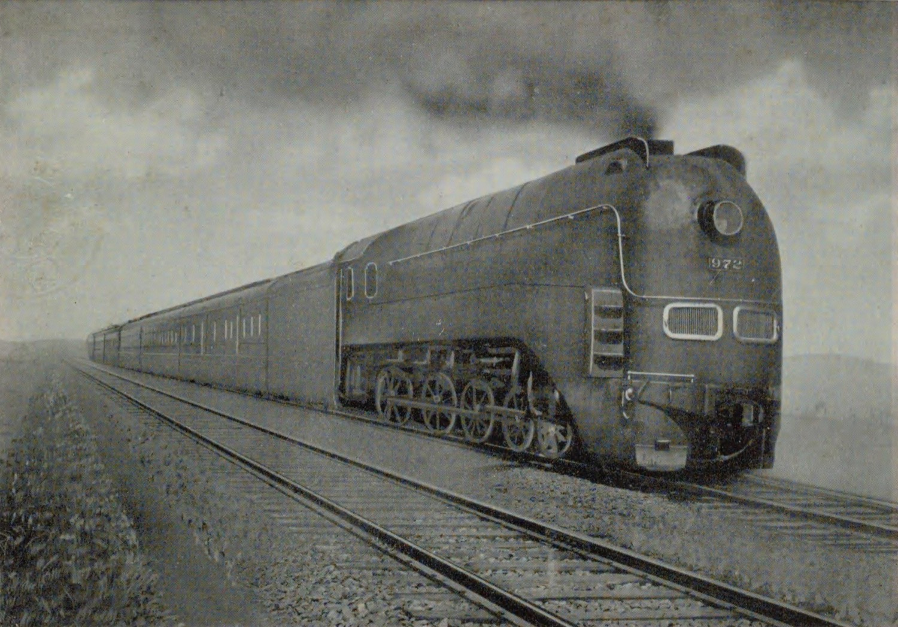
它被设想为通往新加坡的高速铁路网的第一步；报纸、传单、海报、邮票、伪满小学课本里都有它。[E15]美学不等于技术：它的形状是柴油朋克的，动力是蒸汽的，政治功能是帝国宣传。
新京与「穿军服的建筑」。1932 年 3 月 10 日伪满洲国定都长春；改称新京在 3 月 13 日或 14 日（英文维基写 13 日，日文维基写 14 日，没有查到政府公报）。兴亚式（帝冠样式）是钢筋混凝土的现代建筑上加东方式屋顶，因此有「穿着军服的建筑」的绰号。[E13 E27]沙俄 1897–1902 年修建的中东铁路在哈尔滨交汇成 T 形；1905 年日俄战争后，长春以南路段转给日本（南满铁路），长春成了俄式宽轨与日本标准轨的换轨点。[E20 E13]
Xu Yiming 的博士论文（诺丁汉 2024）指出，长春的殖民规划展现出「发展与现代」的面貌，居民生活里却有明显的种族阶层差异；日本作为「亚洲人领导的殖民主义」，使长春区别于西方帝国的殖民城市。[E62]这是一座真的被造出来的「柴油朋克城市」（本页推论）。但在我们的检索里，「柴油朋克 + 新京 / 伪满」几乎没有结果。东亚的战争美学几乎没有被当作可玩的风格来使用，这个空白本身值得记下。
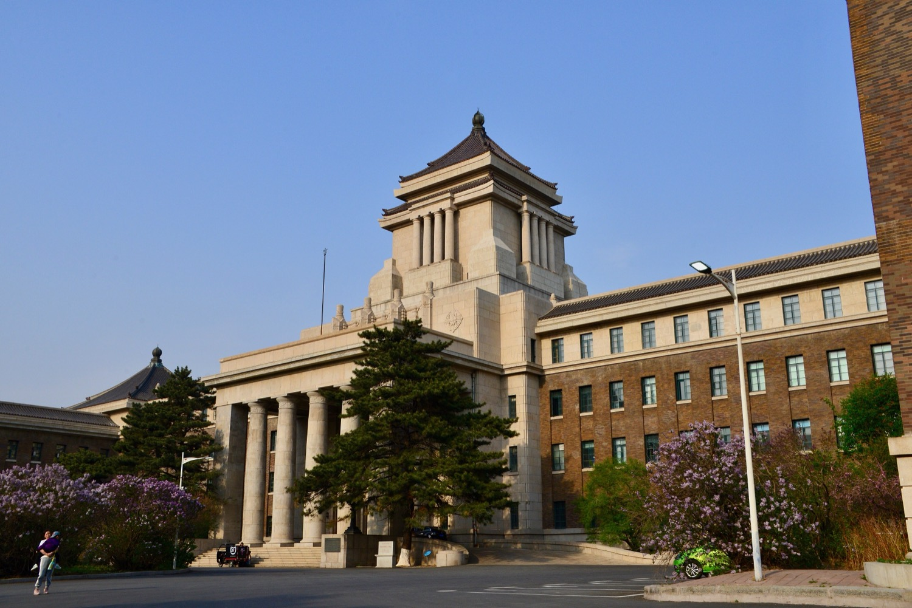
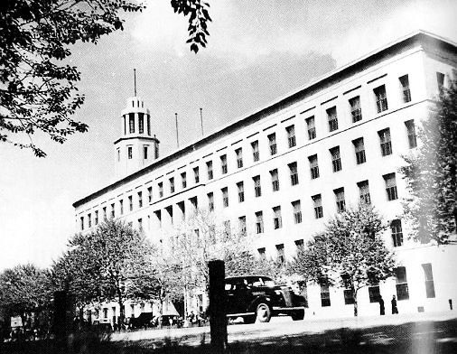
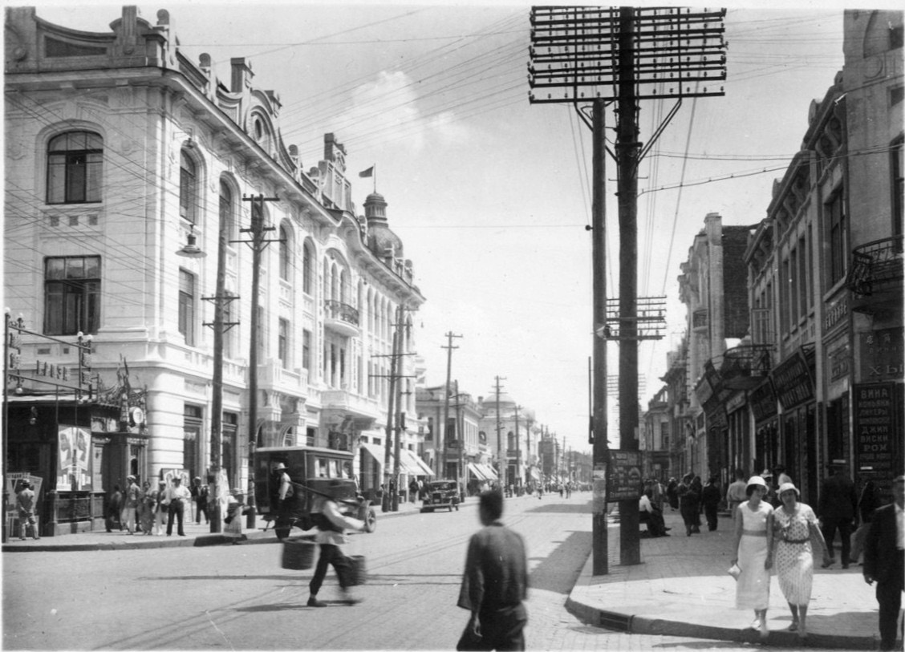
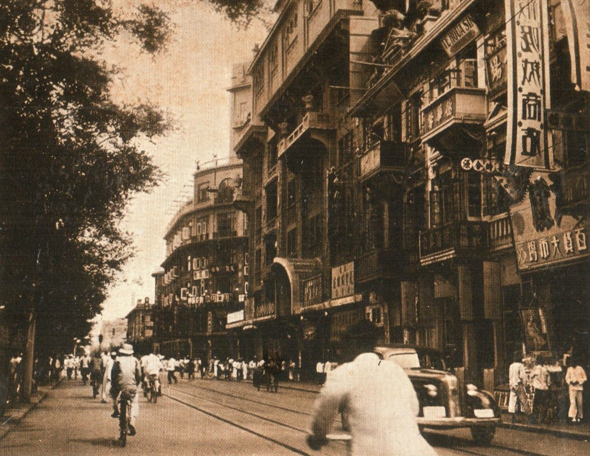
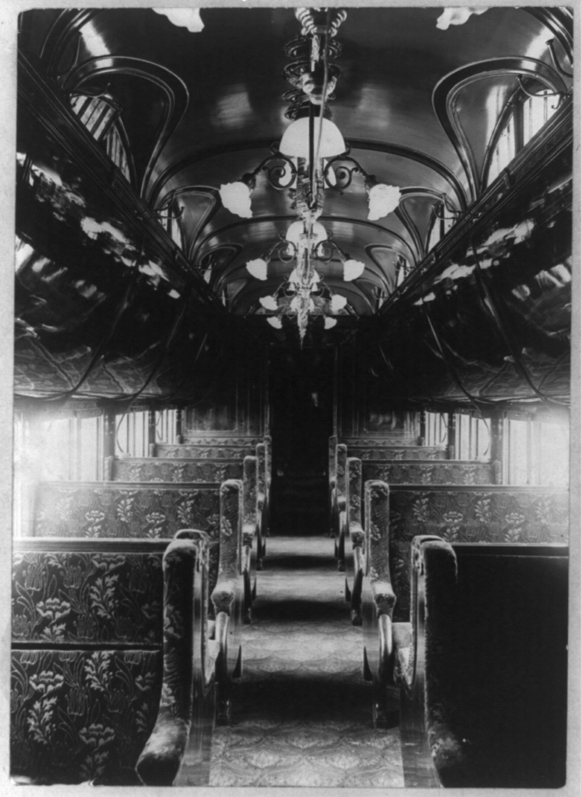
5.6日本：自己的词，和一部反法西斯的「柴油朋克」
日语圈有自己的词：大正浪漫、昭和摩登、昭和レトロ、レトロフューチャー。「大正浪漫」这个词组到 1970 年代才流行，是事后追认的怀旧，不是当时的自称。[E16]モボ・モガ（modern boy / modern girl）是一战后采用西化时尚的日本年轻人，对应美国的 flapper、德国的 neue Frau、中国的「摩登小姐」。[E17]上海《良友》的封面女郎与东京的摩登女郎是同一个跨国现象。
《樱花大战》（1996）设定在虚构的大正时代，英语媒体一律称它蒸汽朋克；英文柴油朋克列表里常被收入的是《红猪》（1992）——日本人拍的、关于意大利的、反法西斯的战间期故事，片中那句「Better a pig than a fascist」（宁做猪，也不做法西斯）。[E18 E19]
另有 Pixiv 百科等日语页面的说法（日本创作的时代背景虽与大正浪漫、昭和摩登相同，但被当成柴油朋克对待的作品出乎意料地少）只来自 AI 检索的转述，原站没能打开。待核
5.7风险，和一个问题
东方主义。dieselpunks.org 论坛里有人把「鸦片馆与茶馆」「黄祸与龙女」直接当作柴油美学的组成部分。[E42]这是一句双刃剑：它承认了「老上海」在西方想象里本来就是 Shanghai Express 一类的东方主义符号。可以和蒸汽朋克圈对「Victorientalism」的批评对照阅读（见第六节）。
殖民怀旧。把租界和满铁浪漫化，与把纳粹制服浪漫化是同一类问题。写「老上海」或「满铁」时，要写明谁建造、为谁、在谁的土地上。
词源。「柴油」在这里并不贴切：亚细亚号是蒸汽，上海用煤和电。不如把「柴油朋克」当作「战间期现代主义的复古未来」的通用词。
这是一个 hauntological 式的提问（借用这个词，不是 Fisher 的论证），可以和下一节 Mark Fisher 的「失落的未来」对读。注意 Fisher 说的失落的未来，是战后英国的 popular modernism 与社会民主，不是战间期的流线型；他的未来是民主化的，柴油朋克的是规划与动员的，方向相反。[T71 T72]而新京和亚细亚号提出的是它的另一面：加害者的失落的未来，通往新加坡的高速铁路网。
这个词是外面带进来的，用来描述一个本身就被外面带进来的未来。所以不要把它写成「中国也有自己的柴油朋克」的荣耀叙事。
喜欢这套美学，意味着什么？
柴油朋克的视觉母体，和它最难堪的政治亲属，共用一套 1930 年代的审美。社区自己早就吵过这件事，吵的方式比外人想象的更细。
6.1桑塔格 1975：同一种美学
NYRB 版权文本，这里只摘引。桑塔格 1975-03-06 在同一刊物发表更正，承认转述了 Kracauer《From Caligari to Hitler》的一段而未注明，引用她时应以修订后的版本为准。[T36]
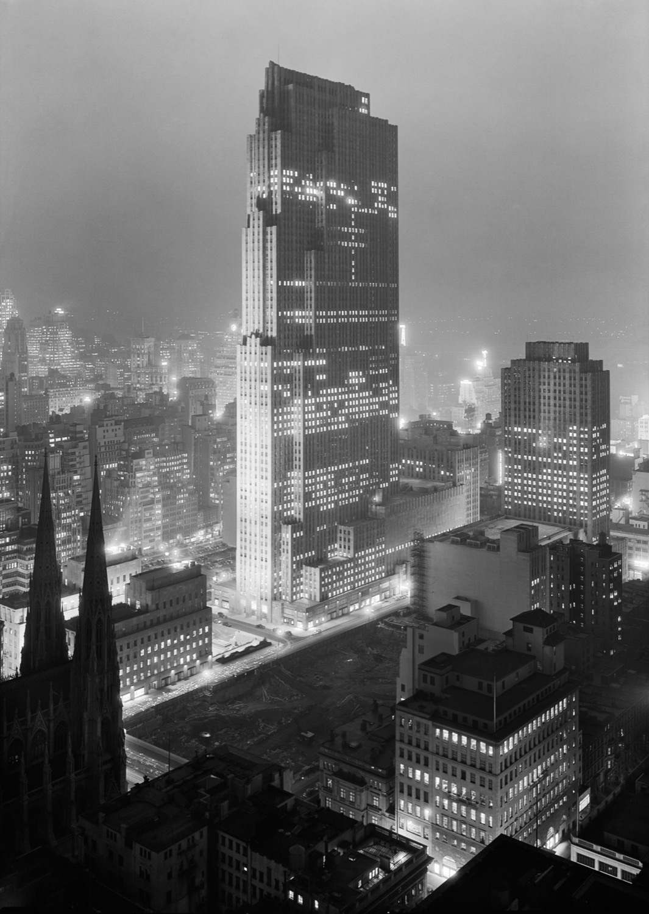
这个预言值得写出来。半个世纪后，柴油朋克恰恰是装饰艺术复兴之后，以另一种形态重新召回「纳粹视觉」的地方之一。（本页的读法，不是来源原话。）[T10]
桑塔格说的法西斯美学，是一种以「控制、服从、过度努力」为核心的戏剧，让「egomania and servitude」两种看似相反的状态都被推崇；不是任何有对称与直线的建筑。引用时要区分。[T10]
6.2Benjamin 与 Eco：什么时候风格变得危险
2.6 里读到的 Marinetti 宣言，就是 Benjamin 点名的那一路：速度之美与战争崇拜从一开始就绑在一起。
| Eco 的条目 | 原文（节选） | 柴油朋克里常见的模板（本页对应） |
|---|---|---|
| 第 3 条 | "Irrationalism also depends on the cult of action for action's sake." | 机器 + 英雄 + 战斗的动作场面本身就是目的。 |
| 第 9 条 | "…life is lived for struggle. Thus pacifism is trafficking with the enemy." | 永久战争的世界观；机核上篇以 “War, war never changes.” 收尾。（S03） |
| 第 11 条 | "…heroism is the norm. This cult of heroism is strictly linked with the cult of death." | 飞行员、战士、巨型机器旁的英雄。 |
Eco 全文为版权文本，仅摘引；条目对应来自 T18。[T18]
6.3别把三个词写混
NAZIPUNK
朋克圈里的新纳粹或种族主义者，多数朋克运动反对他们。不是柴油朋克争议的主体。T64
NAZI CHIC
把纳粹的制服、符号当作好看的行头、cosplay 或架空史素材，风格化。争议的核心。E51 T63
WEIRD WAR II
游戏与小说的题材：二战加柴油动力装甲、纳粹超科学。如 GURPS《Weird War II》（2003）、Wolfenstein、Dust、Iron Sky。E51 W175
机核 S07 把「纳粹朋克」当作子分支名使用，这是 S07 的用语，不是 S03、S04 的。本页在介绍机核原文时保留它，并注明区别。
6.4社区内部的立场光谱
这场争论不是外部指控：社区的写作者自己吵了十年。每个点是一篇文章或一个回应，点开看原话。
6.5失落的未来：我们在怀念什么？
为什么这套东西还在吸引人？复古未来主义和幽灵学（hauntology）给了几种说法。
柴油朋克的「失落的未来」带着一个蒸汽朋克没有的负担。我们怀念的是 1939 年世博会的「明日世界」，还是那个时代对规划、动员、纪律和速度的信仰？Eco 的清单里也有对「行动本身的崇拜」。（本页推论）[T18 T52]
东亚侧是它的延伸：Nick Land 对上海的提问，「如果 1937 年入侵没有打断这座城市的高度现代性」，是一个 hauntological 式的提问（借用术语）；亚细亚号通往新加坡的高速铁路网，则是一个加害者的失落的未来。[E40 E15]Iolanda Ramos 的论文把「retrophilia」（想回去）与「retrofuturistic fascination」（着迷于过去想象未来的方式）分开，是一个有用的概念工具。[T11]
6.6蒸汽朋克圈已经走过的路
蒸汽朋克圈在 2008 到 2020 年间已经把「殖民批评」走了一遍，这些批评几乎可以逐条拿来问柴油朋克。右栏是本页的移植，属推论。
| 蒸汽朋克的批评 | 出处 | 对柴油朋克的移植 |
|---|---|---|
| 「大多数所谓蒸汽朋克只是穿戴起来的怀旧：维多利亚帝国主义者窒息的茶室和殖民傲慢的褪色地图。」应当是「非卢德式的技术批判」。 | SteamPunk Magazine #1（2007）T56 | 柴油朋克的「纯怀旧」版本：爵士时代、制服，而且没有有色人种。 |
| 「Victorientalism」：对东方的维多利亚式想象。 | Beyond Victoriana；Ottens 2010 T50 | 「Shanghai Express」「Dragon Lady」「Yellow Peril」同属柴油时代的东方主义（见 5.7）。 |
| 用蒸汽朋克的表演去「重新协商西方帝国主义、欧洲殖民主义和白人性」。 | Diana Pho，Neo-Victorian Studies 11:2（2019）T57 | 谁有资格表演「被排除者的 1930 年代」？steamfunk / dieselfunk 是现成的回答。 |
| 用蒸汽朋克美学达成后殖民目的。 | Jaymee Goh，McMaster MRP T54 | 蒸汽朋克用「褐色调」；换成柴油朋克的「黑白新闻片」，褪色滤镜抹掉了什么？ |
| 「It's not really clear to me that we are past a period of colonialism; it just takes new forms.」 | Darcy James Argue，SteamPunk Magazine #1 访谈 T56 | 同样适用于租界、满铁在当代的回响。 |
本页没有使用纳粹旗帜或徽章作插图，用建筑、机器和版式，再用文字谈政治。第一节的 Hindenburg 照片尾翼上有纳粹标志，那是一张历史照片，不是风格图例。
机核下篇结尾的那句「敬请期待」，后来呢？
柴油朋克之后是原子朋克。机核 JustCz 的下篇结尾预告了它，那一篇至今没有出现。这一节接着那句话写：词怎么来的、分界在哪、两个朋克怎么共用一座桥。
7.1接上一句预告
下面是调研资料里补的一章，不是机核的原文，标为「本页补充」。
7.2「原子朋克」不是 2005 年才有的词
Bradshaw 那句通过 Wiktionary 词条的引文核实，Kleiner 的帖子是回到 Google Groups 原帖核的。[W144 W229]
7.3它从哪年到哪年？
7.4从 1937 到 1975：一条年代骨架
柴油时代的未来，与原子时代的未来，在同一座城市里接力。
1937 年 Shell 的「明日之城」广告与 1939 年的 Futurama，是柴油朋克的「奥滕斯式」未来，同时已经是流线型向 Googie 过渡的预告；世博会的场馆在 1964 年的纽约世博会被再利用。[W127 W119]
7.5美学接力：Googie 是从流线型里长出来的
Googie 这个词出自 1949 年洛杉矶的 Googie's 咖啡店（建筑师 John Lautner），1952 年 Douglas Haskell 以半讽刺的口吻命名。同期的 Populuxe（popular + luxury）是 1950–60 年代的消费文化：塑料、粉彩、金属感的塑料饰条。[W36 W123]
Raygun Gothic 是桥。William Gibson 1981 年在短篇《The Gernsback Continuum》里造出这个词，指向 Googie、Streamline Moderne 与 Art Deco 的共同未来想象，Lance Olsen 称它「a tomorrow that never was」。[W37 W184]它早于「dieselpunk」（2001）和「atompunk」（2001 / 2008）：两个后来的朋克，是在它上面分叉的。
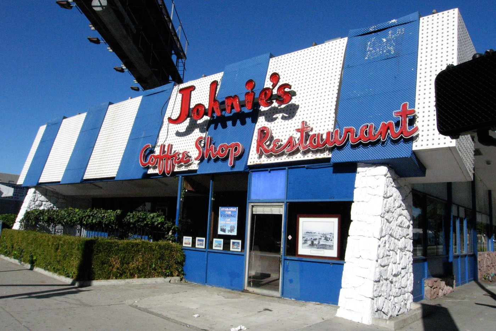
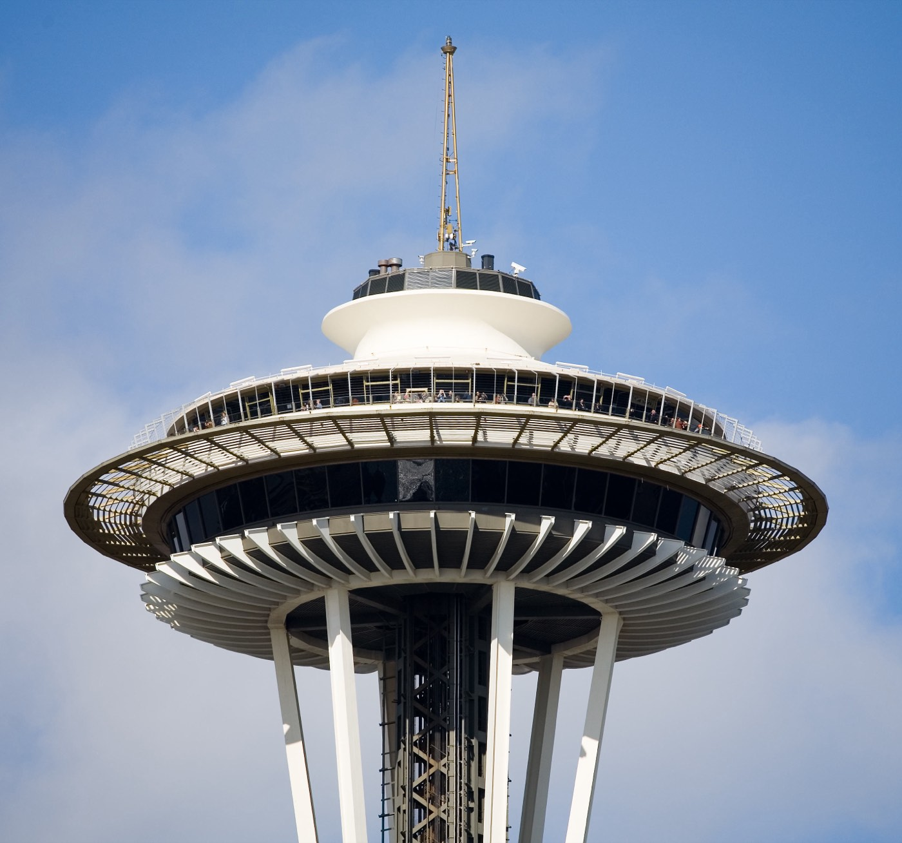
| 柴油（Deco → 二战） | 原子（Googie → Space Age） | |
|---|---|---|
| 材质 | 钢、铬、黄铜、石材、油污 | 玻璃、塑料、铝、霓虹 |
| 线条 | 垂直、阶梯退台、放射状 | 斜线、回旋镖、飞碟、抛物线 |
| 能源符号 | 内燃机、锅炉、飞艇 | 原子轨道图案、火箭、卫星 |
| 情绪 | 乐观（Ottensian）或悲观（Piecraftian），战争是分界 | 表面光鲜，底下是核恐惧与红色恐慌 |
| 载具 | 流线型火车、双翼机、飞艇 | 尾翼汽车、喷气机、飞碟 |
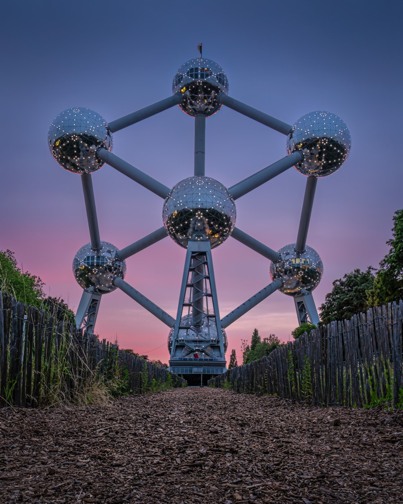
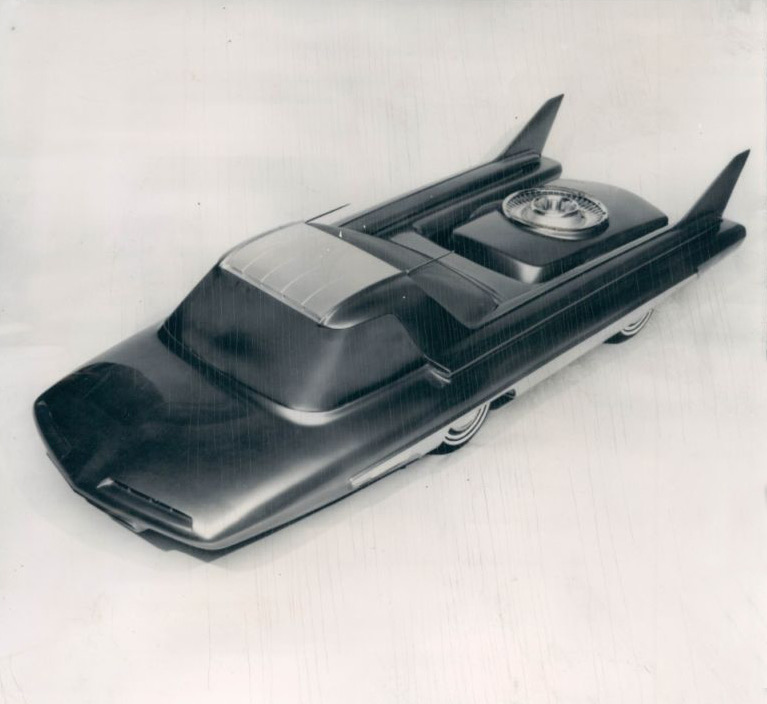
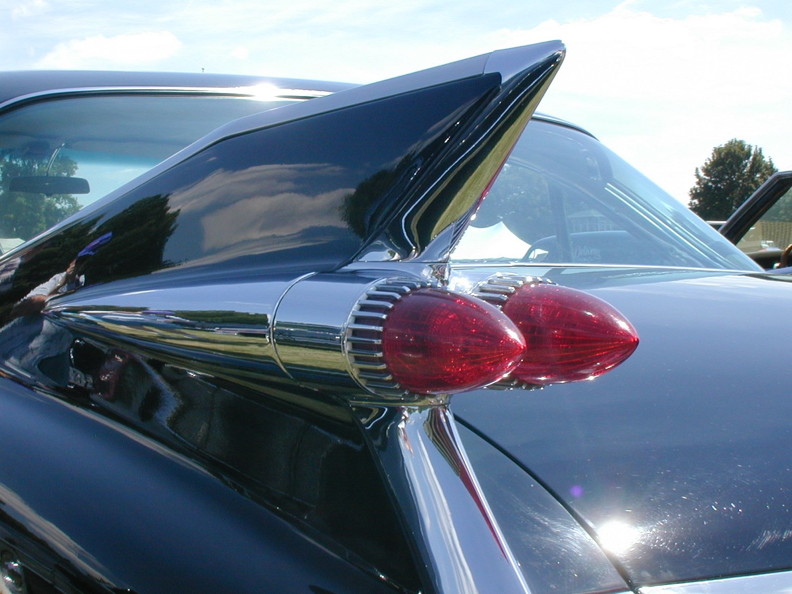
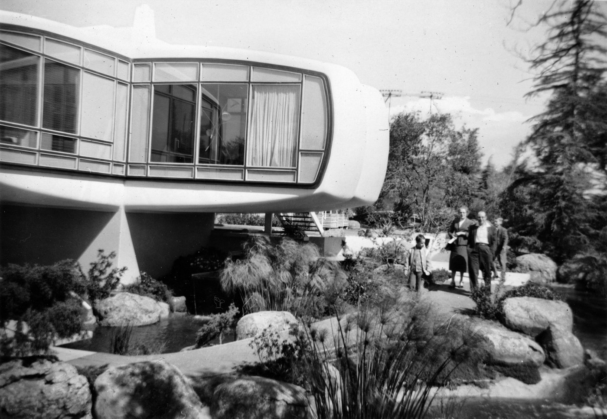
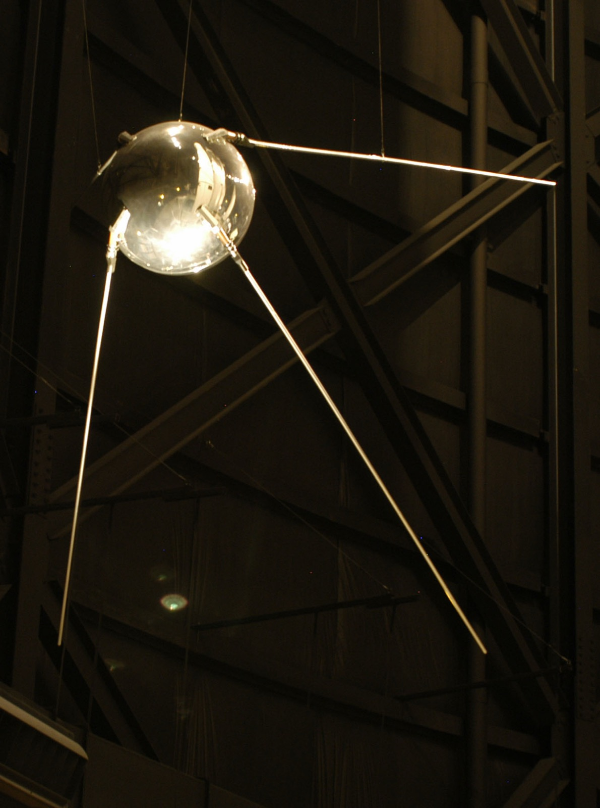
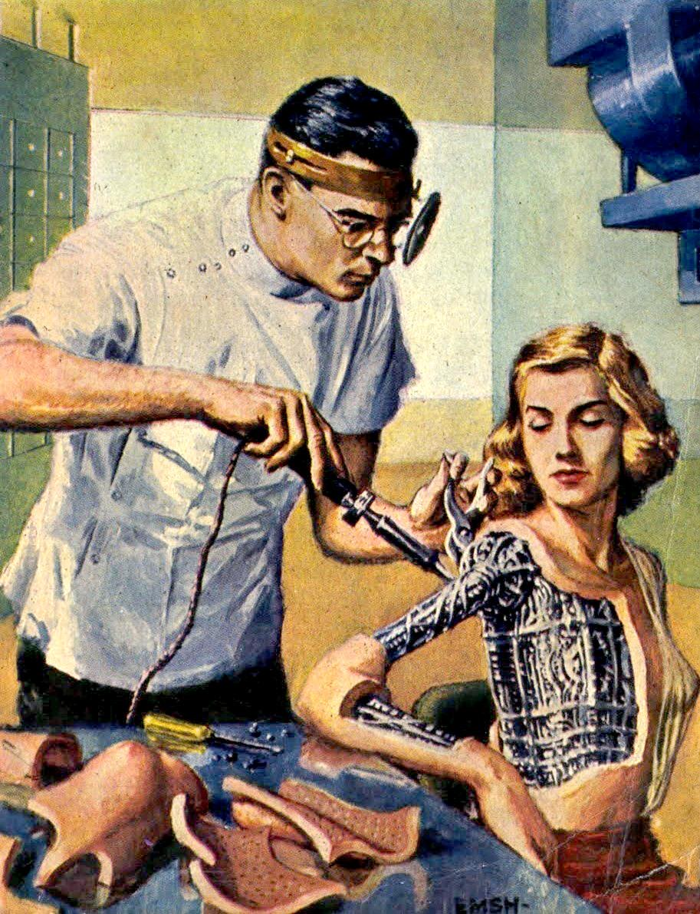
7.6分界在哪里，又怎样延续
7.7过渡带上的作品
7.8如果由我们接着写那一篇
机核原本的系列是按科技发展顺序往下写的。以下是依据调研资料拟的一份提纲，不是机核的内容，仅供参考：
- 定义与年代：1945 为起点，终点在 1965、1969 与 1970 年代之间浮动；Usenet 2001 → PLANETART 2008。
- 美学：Googie、Populuxe、Raygun Gothic；玻璃、塑料、铝、霓虹。
- 恐惧：Duck and Cover、避难所标志、Operation Cue；Atoms for Peace 官方称自己是 “emotion management”。[W120 W121]
- 分支：机核 S07 已给出：真空管 / 晶体管朋克（美国一侧，代表《辐射》）与苏联朋克（《潜行者》《原子之心》）。[S07]
- 代表作与过渡带：Fallout、Atomic Heart、Jetsons、Iron Giant；以及 BioShock、Sky Captain。
回头看：机核这两篇，是怎么一步步写下来的？
《柴油朋克视觉体系简介》是 JustCz「科幻视觉体系」系列的第二部分，因为太长拆成上下篇。本页的第一版就是照着它们展开的。
上篇：钢铁巨兽 2021-09-09
侧重两次大战中的武器与科幻设定，以及柴油朋克的机械特征。[S03]
钢铁悲鸣 战争狂歌
钢铁巨兽
流线与钢铁：机械四原则
工业革命与机械化战争
下篇：战争年代 2021-09-13
讲战争时代的服装、科技和社会环境。[S04]